x <- c(4, 7, 2, 9)
sum(x)[1] 22\[ \renewcommand{\E}{\mathbb{E}} \renewcommand{\P}{\mathbb{P}} \renewcommand{\Var}{\mbox{Var}} \renewcommand{\Cov}{\mbox{Cov}} \]
Bu bölümün amacı.
Bir önceki bölümde veriyi sayarak özetledik ve dağılımın biçimini gözle tanıdık (Bölüm 4). Bu bölümde veriyi hesaplayarak özetleyeceğiz. Amaç, bir veri kümesini birkaç sayıya indirgemek ve bu sayılarla üç soruyu yanıtlamaktır. Veri nerede toplanmıştır, ne kadar yayılmıştır, dağılımın biçimi nasıldır. Bölümün sonunda gelir gibi değişkenler için dördüncü bir soruya da yanıt arayacağız: toplam, gözlem birimleri arasında ne kadar eşit paylaşılmıştır?
Buradaki ölçülerin bir kısmının kendi grafiği vardır ve o grafikler bu bölümde, ölçünün hemen yanında anlatılır. Kutu çizimi beş sayı özetinin resmidir, keman grafiği ise yoğunluk eğrisi ile kartilleri birleştirir. Bu grafikleri bir önceki bölüme koymadık, çünkü ölçüyü bilmeden resmini okumak mümkün değildir. İki değişkenin birlikte değişimini gösteren serpilme diyagramını ve kovaryansı ise bir sonraki bölümde ele alacağız (bkz. Bölüm 6).
Bu bölümdeki ölçüler yalnızca betimleme aracı da değildir. Örneklem ortalaması ve örneklem varyansı Kısım II’de anakütle parametrelerinin tahmincileri olarak yeniden karşımıza çıkacak, oradan da hipotez testlerine ve regresyona uzanacaktır.
Betimsel analizde, bir veri kümesinin genel eğilimini ya da merkezini özetleyen bazı temel ölçülere ihtiyaç duyarız. Bu ölçüler, veri kümesindeki değerlerin nerede toplandığını gösterir ve bize verinin genel yapısı hakkında bilgi verir. Merkezi eğilim ölçüleri, veri dağılımının tipik ya da ortalama bir değerini temsil etmeye çalışır. İstatistikte en yaygın kullanılan merkezi eğilim ölçüleri ortalama, medyan ve moddur.
Ortalama, genellikle bir veri kümesinin merkezini ya da “tipik” değerini gösteren en yaygın kullanılan ölçüdür. Gündelik hayatta da sıklıkla kullanılan bu kavram aslında iki farklı şekilde karşımıza çıkar: anakütle ortalaması ve örneklem ortalaması. Bu iki kavram birbirine benzer görünse de, aralarındaki farkları anlamak istatistiksel analizlerde oldukça önemlidir.
Bu bölümden itibaren formüllerde sık sık \(\sum\) (büyük sigma) simgesini göreceğiz. Bu simge “topla” demektir ve uzun toplamları kısa yazmaya yarar.
\[ \sum_{i=1}^{n} x_i = x_1 + x_2 + \cdots + x_n \]
Simgenin altındaki \(i=1\) toplamanın nereden başlayacağını, üstündeki \(n\) nerede biteceğini, sağındaki \(x_i\) ise neyin toplanacağını söyler. Örneğin \(x = (4,\ 7,\ 2,\ 9)\) için
\[ \sum_{i=1}^{4} x_i = 4 + 7 + 2 + 9 = 22 \]
olur. R’da aynı işlemi sum() yapar.
x <- c(4, 7, 2, 9)
sum(x)[1] 22Sık kullanacağımız üç kural vardır. \(c\) bir sabit olmak üzere:
\[ \begin{aligned} \sum_{i=1}^{n} c &= nc \\[2pt] \sum_{i=1}^{n} c\,x_i &= c \sum_{i=1}^{n} x_i \\[2pt] \sum_{i=1}^{n} (x_i + y_i) &= \sum_{i=1}^{n} x_i + \sum_{i=1}^{n} y_i \end{aligned} \]
Birincisi aynı sabiti \(n\) kez toplamanın onu \(n\) ile çarpmak olduğunu söyler. İkincisi ortak çarpanın toplam dışına alınabileceğini, üçüncüsü ise iki değişkenin toplamının toplamının, toplamların toplamına eşit olduğunu söyler.
Doğrusal olmayan dönüştürmelerde bu kural geçerli değildir. Örneğin kareler toplamı toplamların karesine eşit değildir. Yani, genel olarak
\[ \sum_{i=1}^{n} x_i^{2} \;\neq\; \left( \sum_{i=1}^{n} x_i \right)^{2} \]
olur. Yukarıda tanımladığımız \(x = (4,\ 7,\ 2,\ 9)\) vektöründe \(\sum x_i^2 = 150\) iken \(\left(\sum x_i\right)^2 = 484\)’tür. Bu ayrım varyans hesabında karşımıza çıkacak.
Tanım 5.1 (Anakütle ortalaması, \(\mu\)) \(N\) elemanlı bir anakütleye ilişkin verilerin anakütle ortalaması, bu değerlerin toplamının gözlem sayısına bölünmesiyle bulunur: \[ \mu =\frac{1}{N}\sum_{i=1}^N x_i \tag{5.1}\]
Anakütle ortalaması, \(\mu\), bir araştırmanın hedefi olan tüm birimlerden oluşan veri kümesinin ortalamasıdır. Örneğin, bir şehirde yaşayan tüm insanların ortalama geliri veya bir fabrikanın ürettiği tüm ürünlerin ortalama ağırlığı anakütle ortalamasını temsil eder. Anakütle ortalaması, teorik olarak tüm birimleri kapsayan bir hesaplamadır ve genellikle pratikte tam olarak gözlemlenemeyebilir.
Örnek 5.1 hane_anakutle.RData tüm hanehalklarına ilişkin bilgi içeren bir veri kümesi olsun. R’ın mean() fonksiyonunu kullanarak bu anakütlede ortalama hane büyüklüğünü, ortalama aylık geliri ve ortalama aylık harcamayı hesaplayalım:
load("Data/hane_anakutle.RData")
# anakütle hacmi
N <- nrow(hane_anakutle)
ort_kisi <- mean(hane_anakutle$hane_kisi_sayisi)
ort_gelir <- mean(hane_anakutle$aylik_gelir)
ort_harcama <- mean(hane_anakutle$aylik_harcama)
anakutle_ort <- cbind(N, ort_kisi, ort_gelir, ort_harcama)
print(anakutle_ort) N ort_kisi ort_gelir ort_harcama
[1,] 20000 3.54745 3544.64 3196.489Anakütlede ortalama hane büyüklüğü yaklaşık 3.5 kişi, ortalama aylık gelir yaklaşık 3545 TL ve ortalama aylık harcama yaklaşık 3196 TL olarak bulunur.
Anakütle ortalamasını burada doğrudan hesaplayabildik. Kitapta kullandığımız hane anakütlesini, simülasyonla oluşturulmuş bir laboratuvar gibi düşünebilirsiniz (bkz. Bölüm 3). Gerçek bir araştırmada \(\mu\) çoğu zaman bilinmez ve örneklemden tahmin edilir.
Tanım 5.2 (Örneklem ortalaması, \(\bar{x}\)) Eğer elimizde bir anakütleden çekilmiş \(n\) boyutlu bir örneklem varsa bu durumda örneklem ortalaması \[ \bar{x} =\frac{1}{n}\sum_{i=1}^n x_i \tag{5.2}\] olarak tanımlanır.
Bu tanımlar matematiksel olarak eşdeğer olsalar da yorumlarının farklı olduğuna dikkat ediniz. Örneklem ortalaması, anakütle yerine, anakütleyi temsil eden daha küçük bir alt küme olan örneklemden hesaplanan ortalamadır. Örneğin, bir şehirde yaşayan 1000 kişilik bir örneklem seçildiğinde, bu kişilerin ortalama geliri örneklem ortalaması olarak adlandırılır. Başka bir örneklem çekildiğinde \(\bar{x}\) da değişir, yani sabit değildir (rassal değişken). İlerleyen bölümlerde örneklem ortalaması ile anakütle ortalamasına ilişkin nasıl çıkarım yapıldığını öğreneceğiz.
Örnek 5.2 Anakütleden 10 öğrenci rassal olarak seçilmiş ve GPA değerleri kaydedilmiştir: 3.2, 1.8, 2.5, 2.8, 3.7, 3.1, 2.9, 2.0, 3.5, 3.9.
gpa <- c(3.2, 1.8, 2.5, 2.8, 3.7, 3.1, 2.9, 2.0, 3.5, 3.9)
mean(gpa)[1] 2.94Notların örneklem ortalaması 2.94 olarak bulunmuştur. Bu değer anakütlenin merkezine ilişkin çıkarımlar yapmak amacıyla kullanılabilir.
Örneklem ortalaması tüm gözlem değerlerine eşit ağırlık (\(1/n\)) verir: \[ \bar{x} =\frac{1}{n}\sum_{i=1}^n x_i = \frac{1}{n}x_1+\frac{1}{n}x_2+\ldots+\frac{1}{n}x_n. \]
Verilerde çok büyük ya da çok küçük değerler varsa ortalama bu değerlere duyarlı olur (bkz. Şekil 5.1).
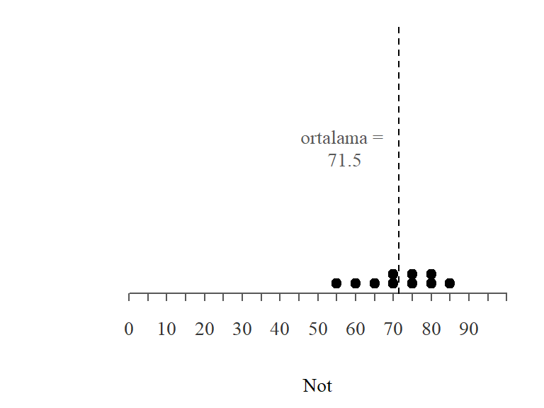
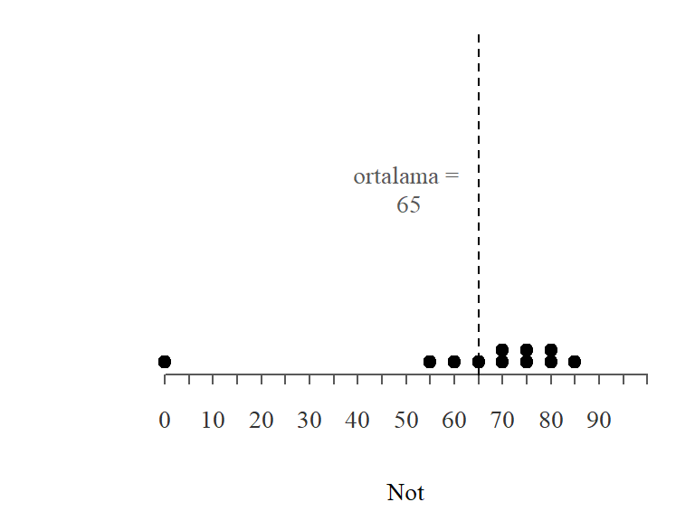
Şekil 5.1 (a), notu 0 olan gözlem hariç tutulduğunda ortalamanın 71.5 olduğunu göstermektedir. Bu durumda, öğrencilerin çoğunluğunun aldığı puanlar 60-80 aralığındadır ve ortalama bu merkezi yansıtmaktadır. Şekil 5.1 (b) ise 0 puanının dahil edildiği durumu göstermektdir. Bu durumda uç değer ortalamayı aşağıya çekmiştir ve 65 olmuştur. Görüldüğü gibi sadece bir adet uç değer (0 puanı) bile ortalamanın ciddi şekilde düşmesine neden olmuştur.
Örnek 5.3 Hane anakütlesinden 200 gözlemlik bir rassal örneklem çekelim ve örneklem ortalamalarını hesaplayalım:
set.seed(468) # replikasyon için
ind <- sample(1:N, # 1,2,...,N tamsayı vektörü
size = 200, # çekilecek örneklem büyüklüğü
replace = FALSE # yerine koymadan çek
)
head(ind)[1] 14164 12119 12154 10831 15448 3628sample() fonksiyonunu kullanarak \(1, 2, \ldots, N\) tamsayı kümesinden (\(N =\) 20000) tesadüfi olarak 200 tanesini yerine koymadan çektik ve ind nümerik (tamsayı) vektörünü oluşturduk. Daha sonra bu gözlemlere karşılık gelen satırları seçerek örneğimizi oluşturacağız:
ornek1 <- hane_anakutle[ind,]
head(ornek1[,1:5]) hane_no hane_kisi_sayisi yillik_gelir aylik_gelir aylik_harcama
14164 14164 2 50780 4231.667 3998.47
12119 12119 3 23456 1954.667 1930.89
12154 12154 4 22469 1872.417 1298.90
10831 10831 4 15412 1284.333 1096.47
15448 15448 2 25317 2109.750 2113.79
3628 3628 7 15915 1326.250 1772.04Örneklem ortalamalarını hesaplayalım:
n <- nrow(ornek1)
ort_kisi <- mean(ornek1$hane_kisi_sayisi)
ort_gelir <- mean(ornek1$aylik_gelir)
ort_harcama <- mean(ornek1$aylik_harcama)
orneklem_ort <- cbind(n, ort_kisi, ort_gelir, ort_harcama)
print(orneklem_ort) n ort_kisi ort_gelir ort_harcama
[1,] 200 3.51 3566.008 3362.66200 haneden oluşan bu rassal örneklemde ortalama hane büyüklüğü 3.51, ortalama aylık gelir yaklaşık 3566 TL ve ortalama aylık harcama yaklaşık 3363 TL olarak bulunur. Bu değerler anakütle ortalamalarına yakındır ama onlara eşit değildir; farklı bir örneklem çekseydik farklı değerler bulurduk.
Aritmetik ortalamada her gözlem eşit ağırlık taşır. Bazı durumlarda ise gözlemlerin önemi birbirinden farklıdır. Örneğin genel not ortalaması hesaplanırken her dersin notu o dersin kredisiyle ağırlıklandırılır. \(w_i\) gözlem \(i\)’nin ağırlığını göstermek üzere ağırlıklı ortalama \[ \bar{x}_w = \frac{\sum_{i=1}^n w_i x_i}{\sum_{i=1}^n w_i} \tag{5.3}\] olarak tanımlanır. Bütün ağırlıklar birbirine eşitse ağırlıklı ortalama aritmetik ortalamaya eşit olur.
Bir öğrencinin kredileri 3, 5 ve 2 olan üç dersten aldığı notlar 80, 60 ve 90 olsun. R’da ağırlıklı ortalama weighted.mean() fonksiyonuyla hesaplanır:
notlar <- c(80, 60, 90)
krediler <- c(3, 5, 2)
c(aritmetik = mean(notlar), agirlikli = weighted.mean(notlar, w = krediler))aritmetik agirlikli
76.66667 72.00000 Kredisi en yüksek olan derste not düşük olduğu için ağırlıklı ortalama aritmetik ortalamadan daha düşüktür. Ağırlık seçiminin yorumu nasıl değiştirdiğine ülke verisiyle bir örnek çözümlü alıştırmalarda yer almaktadır (bkz. Alıştırma 5.4).
Örnek 5.4 eticaret veri kümesinde (bkz. Tablo 3.4) satılan ürünlerin ortalama fiyatını bulmak istediğimizi düşünelim. Her sipariş için ödenen tutarı sepetteki ürün sayısına bölerek ürün başına tutarı hesaplayabiliriz. Bu değerlerin basit ve ürün sayısıyla ağırlıklandırılmış ortalamalarını karşılaştıralım:
load("Data/eticaret.RData")
urun_basina <- eticaret$tutar / eticaret$urun_sayisi
c(siparis_basina_tutar = mean(eticaret$tutar),
urun_basina_basit = mean(urun_basina),
urun_basina_agirlikli = weighted.mean(urun_basina, w = eticaret$urun_sayisi)) siparis_basina_tutar urun_basina_basit urun_basina_agirlikli
1143.3496 690.8002 397.1967 Ürün başına tutarın basit ortalaması yaklaşık 691 TL, ağırlıklı ortalaması ise yaklaşık 397 TL olarak bulunur. Basit ortalamada her sipariş eşit ağırlık taşır. Oysa siparişler eşit sayıda ürün içermez. Süpermarket siparişlerinde sepette çok sayıda ucuz ürün bulunurken elektronik siparişleri çoğunlukla tek ve pahalı bir üründen oluşur. Ürün sayısıyla ağırlıklandırdığımızda satılan her ürün eşit ağırlık taşır ve ucuz ürünlerin çok olduğu siparişler ortalamaya daha fazla yansır.
Ağırlıklı ortalama, toplam cironun satılan toplam ürün sayısına bölünmesiyle bulunan değere eşittir. İki ortalama farklı soruları yanıtlar. Basit ortalama tipik bir siparişte ürün başına ne ödendiğini, ağırlıklı ortalama ise satılan bir ürünün ortalama fiyatını verir.
Medyan, veriler küçükten büyüğe sıralandığında tam ortada yer alan değerdir. Eğer veri setinde çift sayıda gözlem varsa, ortadaki iki değerin ortalaması alınır.
Örnek 5.5 GPA verisi için medyanı hesaplayalım. Burada gözlem sayısı \(n=10\) olduğu için sıralanmış verilerde \(n/2\) ile \(n/2 +1\) pozisyonundaki değerlerin ortalamasıdır:
gpa <- c(3.2, 1.8, 2.5, 2.8, 3.7, 3.1, 2.9, 2.0, 3.5, 3.9)
rbind(`sıra_no`=1:10, `sıralanmış_gpa`=sort(gpa)) [,1] [,2] [,3] [,4] [,5] [,6] [,7] [,8] [,9] [,10]
sıra_no 1.0 2 3.0 4.0 5.0 6.0 7.0 8.0 9.0 10.0
sıralanmış_gpa 1.8 2 2.5 2.8 2.9 3.1 3.2 3.5 3.7 3.95 ve 6 pozisyonundaki değerlerin ortalaması \((2.9+3.1)/2=3\) medyanı verir. R programında median() fonksiyonu ile:
median(gpa)[1] 3bulunabilir.
Gözlem sayısı, \(n\), tek sayı olduğunda sıralanmış veride tam ortadaki değer medyanı verir. Veri kümesine bir gözlem daha ekleyelim ve medyanı hesaplayalım.
gpa2 <- c(3.2, 1.8, 2.5, 2.8, 3.7, 3.1, 2.9, 2.0, 3.5, 3.9, 2.6)
rbind(`sıra` = 1:11, `sıralı_gpa`=sort(gpa2)) [,1] [,2] [,3] [,4] [,5] [,6] [,7] [,8] [,9] [,10] [,11]
sıra 1.0 2 3.0 4.0 5.0 6.0 7.0 8.0 9.0 10.0 11.0
sıralı_gpa 1.8 2 2.5 2.6 2.8 2.9 3.1 3.2 3.5 3.7 3.9\(n=11\) olduğuna göre \((n+1)/2=6\) pozisyonundaki değer medyandır. Buna göre medyan 2.9 olur.
median(gpa2)[1] 2.9Medyan ortalamaya kıyasla uç değerlere daha az duyarlıdır (bkz. Şekil 5.2).
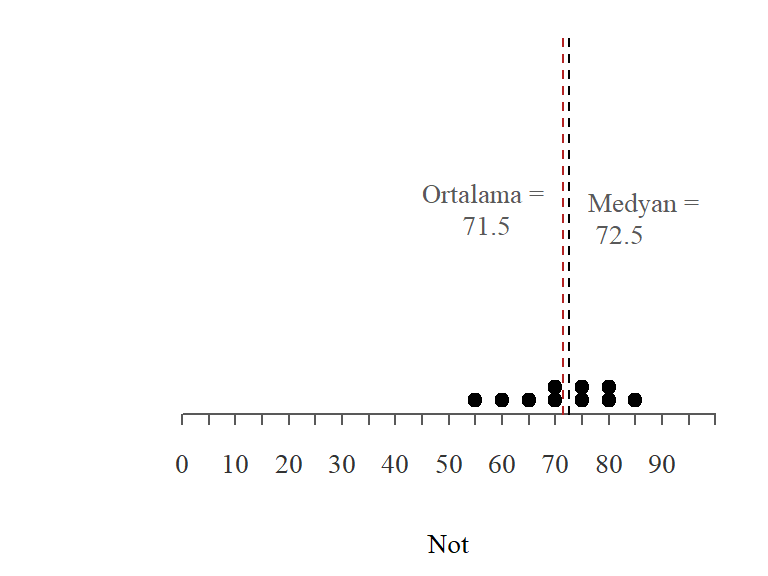
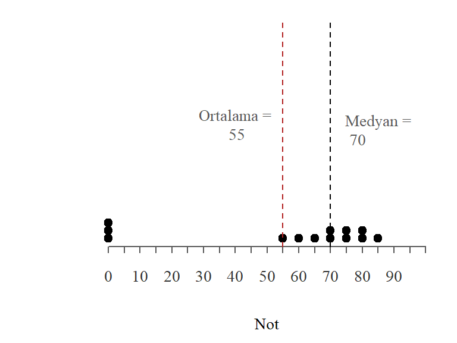
Şekil 5.2 (a) öğrencilerin bir dersten aldıkları notların nokta grafiğini (her nokta bir öğrenciyi temsil etmektedir) ve merkeze ilişkin ölçüleri göstermektedir. Bu verilerde medyan 72.5 olarak hesaplanmıştır. Ortalamanın ise 71.5 olduğunu görüyoruz. Medyanın ve ortalamanın birbirine oldukça yakın olduğunu ve merkezi iyi yansıttıklarını söyleyebiliriz.
Şekil 5.2 (b) ise 0 değerini alan üç gözlemin dahil edildiği grafiği göstermektedir. Ortalamanın ciddi şekilde düşerek 55 olduğunu, medyanın ise 70’e gerilediğini görüyoruz. Burada ilginç olan nokta, uç değerlerin ortalamayı büyük ölçüde düşürmesine rağmen medyanın daha stabil kalmasıdır. Medyan, uç değerlere karşı daha dirençlidir çünkü veri setinin ortadaki değerine bakar, aşırı küçük veya aşırı büyük değerlerden etkilenmez.
Örnek 5.6 Gerçek bir veride uç değerin etkisini görelim. Ülke veri kümesinde (bkz. Örnek 3.4) Sahra Altı Afrika bölgesindeki ülkelerde 2022 yılında doğumda yaşam beklentisi en düşük olan dört ülke şöyledir:
load("Data/ulkeler.RData")
kesit_2022 <- subset(ulkeler, yil == 2022)
afrika <- subset(kesit_2022, bolge == "Sahra Altı Afrika")
head(afrika[order(afrika$yasam_beklentisi), c("ulke", "yasam_beklentisi")], 4) ulke yasam_beklentisi
9878 Orta Afrika Cumhuriyeti 18.818
9683 Nijerya 54.079
2338 Çad 54.528
7603 Lesotho 56.812Orta Afrika Cumhuriyeti’nde yaşam beklentisi 18.8 yıl görünmektedir. Bu değer, bir sonraki en düşük değerden yaklaşık 35 yıl daha azdır. Bölgenin ortalama ve medyanını bu ülke dahil ve hariç olarak hesaplayalım:
rbind(tum_ulkeler = c(ortalama = mean(afrika$yasam_beklentisi),
medyan = median(afrika$yasam_beklentisi)),
oac_haric = c(mean(afrika$yasam_beklentisi[!oac]),
median(afrika$yasam_beklentisi[!oac]))) ortalama medyan
tum_ulkeler 63.27186 63.6050
oac_haric 64.23825 63.8975Bölgedeki 47 ülkeden yalnızca birinin ortalamayı yaklaşık 1.0 yıl aşağı çektiğini, medyanın ise yalnızca 0.3 yıl değiştiğini görüyoruz.
Böyle bir değerle karşılaşınca ilk soru, değerin bir hata mı yoksa gerçek bir durumun yansıması mı olduğudur. Aynı ülkenin komşu yıllarına bakmak iyi bir başlangıçtır:
oac_seri[, c("yil", "yasam_beklentisi")] yil yasam_beklentisi
9874 2018 52.297
9875 2019 31.530
9876 2020 50.596
9877 2021 40.279
9878 2022 18.818
9879 2023 57.408
9880 2024 57.671Değer bir yıl önce 40.3, bir yıl sonra ise 57.4 yıldır ve seride başka ani düşüşler de vardır. Dünya Bankası bu göstergeyi Birleşmiş Milletler Nüfus Bölümü’nün tahminlerinden almaktadır. Ölüm kayıtlarının eksik olduğu ve uzun süredir silahlı çatışmaların yaşandığı bir ülkede yaşam beklentisi doğrudan ölçülemez, modellerle tahmin edilir. Bu yüzden 18.8 yıllık değer gerçek bir ölüm artışını yansıtıyor olabileceği gibi tahmin yönteminden kaynaklanan bir sapma da olabilir. Hangisi olduğuna karar vermek için veriyi kullanan kişinin kaynağın açıklamalarına ve başka veri kaynaklarına bakması gerekir.
Uç değerleri incelemeden silmek de, fark etmeden kullanmak da hatalıdır. Uygulamada iyi bir yol, sonuçların uç değere ne kadar duyarlı olduğunu yukarıda yaptığımız gibi raporlamaktır. Böyle belirsiz gözlemler karşısında medyan güvenilir bir özet sunar.
Örnek 5.7 Hanehalkı anakütlesi ve örneklemde hane kişi sayısı, aylık gelir ve aylık harcama için medyanları hesaplayalım.
med_kisi <- median(hane_anakutle$hane_kisi_sayisi)
med_gelir <- median(hane_anakutle$aylik_gelir)
med_harcama <- median(hane_anakutle$aylik_harcama)
anakutle_medyan <- cbind(med_kisi, med_gelir, med_harcama)
anakutle_medyan med_kisi med_gelir med_harcama
[1,] 3 2825.833 2518.865med_kisi <- median(ornek1$hane_kisi_sayisi)
med_gelir <- median(ornek1$aylik_gelir)
med_harcama <- median(ornek1$aylik_harcama)
ornek_medyan <- cbind(med_kisi, med_gelir, med_harcama)
ornek_medyan med_kisi med_gelir med_harcama
[1,] 3 2894.667 2524.49Anakütlede medyan hane büyüklüğü 3, örneklemde 3 kişi olarak bulunur. Aylık gelirin örneklem medyanı anakütle medyanından 69 TL daha yüksek, aylık harcamanınki ise 6 TL daha yüksek bulunmuştur.
Bir veri kümesinin modu en çok tekrar eden değer ya da değerler olarak tanımlanır. Verilerde mod olmayabilir ya da birden fazla olabilir.
Örnek 5.8 Aşağıdaki veri kümesinin modunu bulalım. R table() fonksiyonunu kullanarak her bir değerin kaç kere tekrar ettiğini görebiliriz:
v1 <- c(7, 2, 7, 3, 7, 1, 3, 4, 7, 3, 2, 2, 4, 8, 5, 6, 7, 9, 1)*10
table(v1)v1
10 20 30 40 50 60 70 80 90
2 3 3 2 1 1 5 1 1 Sıklık değerlerini küçükten büyüğe doğru sıralayalım:
sort(table(v1))v1
50 60 80 90 10 40 20 30 70
1 1 1 1 2 2 3 3 5 Buna göre mod veri kümesinde 5 kere tekrar eden 70 değeridir (bkz. Şekil 5.3).
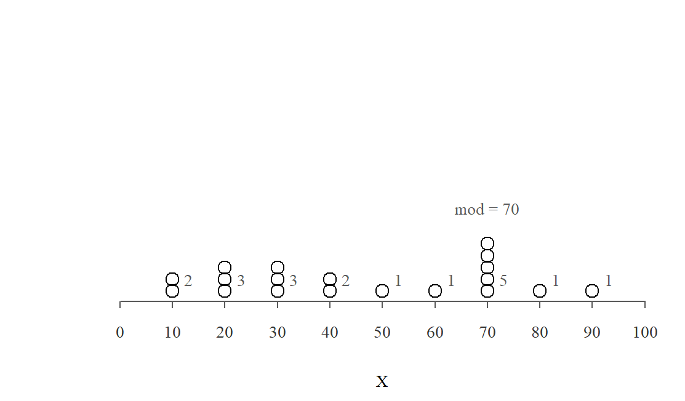
R’da en sık değeri hesaplayan hazır bir fonksiyon yoktur. Adı benzese de mode() fonksiyonu modu değil, bir nesnenin saklama türünü verir; örneğin mode(v1) sonucu "numeric" olur. Modu bulmak için kendi fonksiyonumuzu yazabiliriz.
Örnek 5.9 Girdi olarak bir nümerik ya da faktör değişkenini alıp modu hesaplayan bir R fonksiyonu yazınız.
Çözüm:
# x vektörünün modunu hesaplayan fonksiyon
mod <- function(x) {
# Faktör değişkenleri karakter dizilerine dönüştür
if (is.factor(x)) {
x <- as.character(x)
}
# sıklık tablosu oluştur
tablo <- table(x)
max_freq <- max(tablo)
modes <- names(tablo)[which(tablo == max_freq)]
# Eğer x numerikse, sonucu numerik yap
if (is.numeric(x)) {
return(as.numeric(modes))
}
# Değilse, karakter olarak döndür
return(modes)
}Önceki örnekteki veri kümesine uygulayalım:
mod(v1)[1] 70Örnek 5.10 Bir değişkenin birden fazla modu olabilir. Örneğin aşağıdaki veri kümesinde
v2 <- c(3, 2, 5, 3, 7, 2, 3, 4, 5, 3, 3, 2, 4, 5, 5, 6, 7, 8, 5)*10
table(v2)v2
20 30 40 50 60 70 80
3 5 2 5 1 2 1 30 ve 50 değerleri beşer kere tekrar etmiştir.
mod(v2)[1] 30 50Örnek 5.11 Hane örnekleminde sağlık merkezlerine erişimin zorluğuna ilişkin bilgi içeren saglik_merkezi_erisim değişkeninin modunu hesaplayınız.
Frekans tablosunu oluşturalım:
table(ornek1$saglik_merkezi_erisim)
1 2 3 4 5
32 93 12 44 19 Buna göre en sık gözlenen değer 2’dir (Kolay).
table(ornek1$saglik_merkezi_erisim_olcek)
Çok kolay Çok zor Kolay Orta Zor
32 19 93 12 44 saglik_merkezi_erisim_olcek karakter değişkenini kullanarak bir faktör değişkeni oluşturalım:
# Faktör değişkeni tanımlama
ornek1$saglik_merkezi_erisim_faktor <- factor(
ornek1$saglik_merkezi_erisim_olcek,
levels = c("Çok kolay", "Kolay", "Orta", "Zor", "Çok zor"),
ordered = TRUE
)
print(levels(ornek1$saglik_merkezi_erisim_faktor))[1] "Çok kolay" "Kolay" "Orta" "Zor" "Çok zor" Bu faktör değişkeninin sıklık tablosunu oluşturalım.
table(ornek1$saglik_merkezi_erisim_faktor)
Çok kolay Kolay Orta Zor Çok zor
32 93 12 44 19 Bu tablodan da görüleceği gibi en sık cevap “Kolay”’dır (bkz. Şekil 5.4).
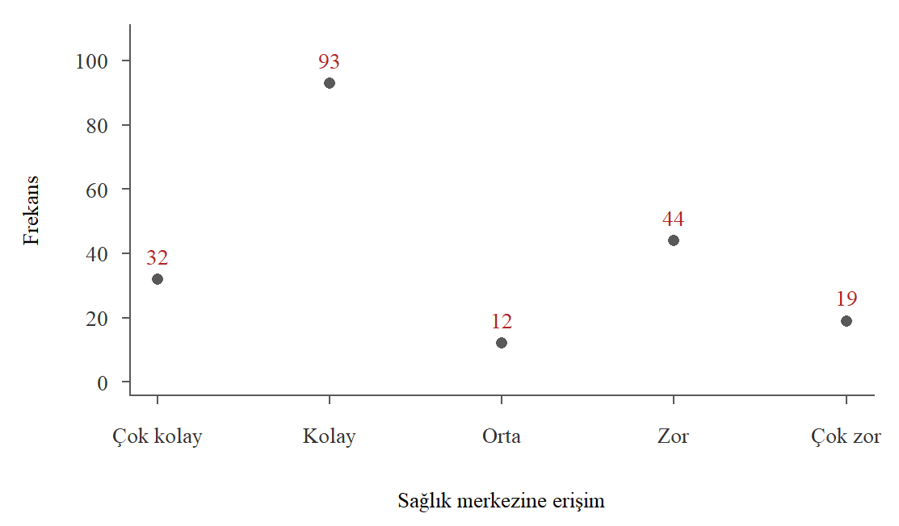
Yazdığımız fonksiyonu kullanarak da modu bulabiliriz:
mod(ornek1$saglik_merkezi_erisim)[1] 2mod(ornek1$saglik_merkezi_erisim_olcek)[1] "Kolay"Sıralı (ordinal) değişkenler için mod ve medyan anlamlı bilgi içerir. Yukarıdaki sonuçlardan hareketle hanenin bulunduğu yerden sağlık merkezine erişimin zorluğuna ilişkin en çok verilen cevap “Kolay”’dır. Nominal değişkenler için ise yalnızca mod anlamlıdır; sayılarla kodlanmış bir nominal değişkenin ortalaması ya da medyanı hiçbir şey ifade etmez. Sıralı değişkenlerde sayısal kodların ortalamasını almak da tartışmalıdır, çünkü kategoriler arasındaki uzaklıkların eşit olduğu varsayılmış olur (bkz. Tablo 3.3).
Örnek 5.12 Eğitim düzeyine ilişkin 6 gözlemli bir karakter vektörü verilmiş olsun:
diploma <- c("İlkokul", "Lise", "Üniversite", "Lise", "Lise", "Üniversite")diploma karakter vektöründen hareketle bir faktör değişkeni oluşturalım:
egitim_seviyesi <- factor(diploma,
levels = c("İlkokul", "Lise", "Üniversite"),
ordered = TRUE)egitim_seviyesi en son kazanılan diploma bilgisini içeren bir faktör değişkenidir:
egitim_seviyesi[1] İlkokul Lise Üniversite Lise Lise Üniversite
Levels: İlkokul < Lise < ÜniversiteFaktör değişkeni sayısal değere dönüştürüldüğünde eğitim düzeyinin sırasını yansıtacak şekilde ilkokul için 1, lise için 2, üniversite için 3 değerini almaktadır.
as.numeric(egitim_seviyesi)[1] 1 2 3 2 2 3ortalama_egitim <- mean(as.numeric(egitim_seviyesi))
print(ortalama_egitim)[1] 2.166667Kodların ortalaması 2.17 olarak bulunur. Ancak bu sayı “lisenin biraz üzerinde bir eğitim düzeyi” gibi yorumlanamaz, çünkü ilkokul ile lise arasındaki farkın lise ile üniversite arasındaki farka eşit olduğunu varsaymak için bir gerekçe yoktur.
mod(egitim_seviyesi)[1] "Lise"median(as.numeric(egitim_seviyesi))[1] 2Ortadaki ve en sık rastlanan eğitim düzeyi “2” ya da “Lise”’dir.
Geometrik ortalama büyüme ve getiri oranları veya yüzdeleri hesaplamak için uygun bir ölçüdür. Aritmetik ortalamanın yanı sıra, özellikle büyüme oranlarının ortalamasını hesaplamada daha doğru sonuçlar verebilir. Geometrik ortalama gözlem değerlerinin çarpımının \(n\)-kökü olarak tanımlanır:
\[ \bar{x}_g = \sqrt[n]{x_1\cdot x_2\cdot \ldots\cdot x_n}=\left(x_1\cdot x_2\cdot \ldots\cdot x_n \right)^{1/n}=\left( \prod_{i=1}^n x_i \right)^{1/n} \tag{5.4}\] Bu formüldeki \(\prod_{i=1}^n x_i\), 1’den \(n\)’ye kadar bütün değerlerin çarpımını gösteren çarpım işlemcisidir. Geometrik ortalama yalnızca pozitif değerler için tanımlıdır. Getiri oranları negatif olabildiği için aşağıdaki formülde oranların kendisi değil, 1 eklenmiş hâlleri çarpılır.
Özellikle finansta getiri oranlarının geometrik ortalaması daha doğru bir şekilde ortalama davranışı yansıtabilir. \(g_i\) getiri oranı ise, geometrik ortalama \[ \bar{x}_g = \left( \prod_{i=1}^n (1+g_i) \right)^{1/n} -1 \tag{5.5}\] olarak tanımlanır.
Örnek 5.13 Bir yatırımcı 1000 TL’lik anaparayı bir finansal varlığa yatırmıştır. Varlığın değeri 1. yılda 1200 TL, 2. yılda 1260 TL, 3. yılda 1134 TL, 4. yılda 1304.1 TL, ve 5. yılda 1238.9 TL olmuştur. Yıllık ortalama getiri yüzde kaçtır?
Çözüm:
Önce her yılın getirisini hesaplayalım:
yıl getirisi: \[ \frac{1200}{1000} - 1 = 0.20 \]
yıl getirisi: \[ \frac{1260}{1200} - 1 = 0.05 \]
yıl getirisi: \[ \frac{1134}{1260} - 1 = -0.10 \]
yıl getirisi: \[ \frac{1304.1}{1134} - 1 = 0.15 \]
yıl getirisi: \[ \frac{1238.9}{1304.1} - 1 = -0.05 \] Aritmetik ortalamayı hesaplarsak \[ \bar{x} = \frac{0.2+0.05-0.10+0.15-0.05}{5}=0.05 \] buluruz. Yani aritmetik ortalamaya göre varlık her yıl ortalama \(\%5\) büyümüştür. Ancak bu yanıltıcı olabilir.
| Yıl | Değer | Getiri | Aritmetik Ortalama Getiri | Aritmetik Ortalama Değer | Geometrik Ortalama Getiri | Geometrik Ortalama Değer |
|---|---|---|---|---|---|---|
| 1 | 1200 | %20 | %5 | 1050 | %4.378 | 1043.8 |
| 2 | 1260 | %5 | %5 | 1102.5 | %4.378 | 1089.48 |
| 3 | 1134 | -%10 | %5 | 1157.6 | %4.378 | 1137.2 |
| 4 | 1304.1 | %15 | %5 | 1215.5 | %4.378 | 1186.9 |
| 5 | 1238.9 | -%5 | %5 | 1276.28 | %4.378 | 1238.9 |
Şimdi geometrik ortalamayı hesaplayalım: \[ \text{Geometrik Ortalama} = \left( (1 + 0.20) \times (1 + 0.05) \times (1 - 0.10) \times (1 + 0.15) \times (1 - 0.05) \right)^{\frac{1}{5}} - 1 \] \[ = \left( 1.20 \times 1.05 \times 0.90 \times 1.15 \times 0.95 \right)^{\frac{1}{5}} - 1= 1.2389^{\frac{1}{5}} - 1=1.0438 - 1 = 0.0438 \]
#
g <- c(1.2,1.05,0.9,1.15,0.95)
prod(g)^(1/5)-1[1] 0.04377502Buna göre finansal varlık yılda ortalama yaklaşık \(\%4.38\) büyümüştür. Bu aritmetik ortalamaya göre daha düşük bir ortalama getiriye işaret etmektedir.
Tablo 5.1 yatırımın yıllara göre getirilerini ve dönem sonu değerini göstermektedir. Her yıl bu ortalama oranda büyürse 5 yıl sonundaki değere ulaşılmaktadır. Aritmetik ortalama ile hesapladığımızda ise daha büyük bir değere ulaşıyoruz.
Örnek 5.14 eticaret_gunluk veri kümesinden aylık ciroyu hesaplayıp aylık büyüme oranlarını bulalım:
load("Data/eticaret.RData")
aylik_ciro <- tapply(eticaret_gunluk$ciro, format(eticaret_gunluk$tarih, "%m"), sum)
names(aylik_ciro) <- c("Oca", "Şub", "Mar", "Nis", "May", "Haz",
"Tem", "Ağu", "Eyl", "Eki", "Kas", "Ara")
aylik_buyume <- aylik_ciro[-1] / aylik_ciro[-12] - 1
round(100 * aylik_buyume, 1) Şub Mar Nis May Haz Tem Ağu Eyl Eki Kas Ara
-2.2 8.4 -5.4 15.7 0.2 2.1 -6.7 8.2 8.1 52.9 -23.8 aritmetik_b <- mean(aylik_buyume)
geometrik_b <- prod(1 + aylik_buyume)^(1 / length(aylik_buyume)) - 1
round(100 * c(aritmetik = aritmetik_b, geometrik = geometrik_b), 2)aritmetik geometrik
5.24 3.83 Aylık büyüme oranları kasımda yüzde 52.9 ile en yüksek, aralıkta yüzde -23.8 ile en düşük değerini almıştır. Kampanya ayındaki büyük artışı izleyen büyük düşüş, aritmetik ortalamayı yüzde 5.24 düzeyine çıkarmaktadır. Geometrik ortalama ise yüzde 3.83 olarak bulunur.
Hangisinin cironun gerçek seyrini yansıttığını görmek için ocak cirosunu her iki oranla 11 ay boyunca büyütelim:
round(c(aritmetik_ile = aylik_ciro[["Oca"]] * (1 + aritmetik_b)^11,
geometrik_ile = aylik_ciro[["Oca"]] * (1 + geometrik_b)^11,
gerceklesen_aralik = aylik_ciro[["Ara"]])) aritmetik_ile geometrik_ile gerceklesen_aralik
2695667 2323353 2323353 Geometrik ortalama aralık ayındaki gerçekleşen ciroyu tam olarak verirken aritmetik ortalama ciroyu olduğundan yüksek gösterir. Oranlar yıldan yıla ya da aydan aya ne kadar çok dalgalanırsa iki ortalama arasındaki fark o kadar büyür.
Veriyi betimlemedeki en önemli araçlardan biri gözlemlerin küçükten büyüğe doğru sıralanmasıdır. Elimizde \(x_1,x_2,\ldots,x_n\) gibi bir örneklem olduğunu düşünelim. Bu değerleri artan şekilde sıralayalım: \[ x_{(1)}, x_{(2)},x_{(3)},\ldots,x_{(n)} \] Burada sıralamada \(k\)’ıncı konumda yer alan değer, \(x_{(k)}\), \(k\)’ıncı sıra istatistiğidir. Örneğin \(x_{(1)}\) en küçük (minimum), \(x_{(n)}\) en büyük (maksimum) değeri gösterir. \[ x_{(1)} = \min(x_1,x_2,\ldots,x_n) \] \[ x_{(n)} = \max(x_1,x_2,\ldots,x_n) \]
Örnek 5.15
gpa <- c(3.2, 1.8, 2.5, 2.8, 3.7, 3.1, 2.9, 2.0, 3.5, 3.9)
rbind(`sıra` = 1:10, `sıralı_gpa` = sort(gpa)) [,1] [,2] [,3] [,4] [,5] [,6] [,7] [,8] [,9] [,10]
sıra 1.0 2 3.0 4.0 5.0 6.0 7.0 8.0 9.0 10.0
sıralı_gpa 1.8 2 2.5 2.8 2.9 3.1 3.2 3.5 3.7 3.9Bu sıralı veri kümesinden hareketle \[ x_{(1)} = 1.8,~~ x_{(2)}=2.0,~~ x_{(3)}=2.5,\ldots,~~ x_{(10)}=3.9 \] yazabiliriz.
Sıra istatistiklerini kullanarak gözlemlerin yüzde kaçının küçük olacağı değerleri bulabiliriz. Gözlemlerin yaklaşık olarak yüzde \(100(k/n)\) kadarı \(x_{(k)}\) değerine eşit ya da ondan küçüktür. Bu istatistikler verinin değişkenliği ve yayılımı hakkında önemli bilgiler verebilir.
Tanım 5.3 (Kantil) Bir veri kümesini belirli sayıda eşit parçaya bölen değerlere kantil (quantile) adı verilir. Bu değerler, veri setindeki gözlemlerin belirli bir yüzdesinin altında veya üstünde kalan değerleri gösterir. Kantiller, sıra istatistikleri kullanılarak hesaplanır.
Uygulamada genellikle gözlemleri ikiye, dörde, ona ya da yüze bölen kantil değerleri kullanılır.
Tanım 5.4 (Kartil (Çeyreklik, Dördebölen, Quartile)) Kartiller, kantillerin özel bir durumudur ve gözlemleri dört eşit parçaya böler:
Kartiller, veri kümesinin yayılımı ve merkezi eğilimi hakkında bilgi verir ve sıra istatistikleri kullanılarak hesaplanır.
Sıralanmış \(n\) gözlemli bir örneklemde, \(k = \frac{n+1}{4}=0.25(n+1)\) olmak üzere, \(j\) kartili aşağıdaki formül ile bulunabilir:
\[\begin{align*} Q_j &= \begin{cases} x_{(jk)} & \text{ } jk \text{ bir tamsayı ise} \\ x_{(\lfloor jk \rfloor)} + (jk - \lfloor jk \rfloor) \cdot (x_{(\lfloor jk \rfloor + 1)} - x_{(\lfloor jk \rfloor)}) & \text{ } jk \text{ bir tamsayı değilse} \end{cases} \\ \end{align*}\]
Burada \(\lfloor \cdot \rfloor\) bir sayıyı aşağı yuvarlayan taban fonksiyonudur; \(a=1.85\) ise \(\lfloor a \rfloor=1\) olur. Yani \(a\)’dan büyük olmayan en büyük tamsayı 1’dir. Benzer şekilde tavan fonksiyonu, \(\lceil \cdot \rceil\), tanımlanabilir. Tavan fonksiyonu \(a\)’dan küçük olmayan en küçük tamsayı olarak tanımlanır, bu durumda \(\lceil a \rceil=2\) olur.
Örnek 5.16 Örneğin 11 gözlemli bir veri kümesinde birinci kartili, \(Q_1\), hesaplamak istediğimizi düşünelim. \(k=0.25(11+1)=3\) bir tamsayı olduğu için birinci kartil \(Q_1=x_{(k)}=x_{(3)}\), yani üçüncü sıradaki gözlem olur.
Örnek olarak öğrenci notları verisini düşünelim:
gpa <- c(3.2, 1.8, 2.5, 2.8, 3.7, 3.1, 2.9, 2.0, 3.5, 3.9, 2.7)
rbind(`sıra` = 1:11, `sıralı_gpa` = sort(gpa)) [,1] [,2] [,3] [,4] [,5] [,6] [,7] [,8] [,9] [,10] [,11]
sıra 1.0 2 3.0 4.0 5.0 6.0 7.0 8.0 9.0 10.0 11.0
sıralı_gpa 1.8 2 2.5 2.7 2.8 2.9 3.1 3.2 3.5 3.7 3.9Burada \(x_{(3)}=2.5\) olduğu için birinci kartil \(Q_1=2.5\) olarak bulunur.
Örnek 5.17 \(n=10\) gözlemli bir veri kümesinde ise \(0.25(10+1)=2.75\) bir tamsayı olmadığı için ikinci ve üçüncü sıradaki değerlerin interpolasyonu ile bulunur. Örneğin,
x <- c(1:10)*10
rbind(`sıra` = 1:10, `sıralı_x` = sort(x)) [,1] [,2] [,3] [,4] [,5] [,6] [,7] [,8] [,9] [,10]
sıra 1 2 3 4 5 6 7 8 9 10
sıralı_x 10 20 30 40 50 60 70 80 90 100veri kümesinde \(j=1\) kartili
\[\begin{align*} Q_1 &= x_{(2)} + (2.75 - 2) \cdot (x_{(3)} - x_{(2)})\\ &= 20+ 0.75\cdot(30-20)\\ &= 27.5 \end{align*}\]
olur. Yani, 3. sıradaki gözlem (30) ile 2. sıradaki gözlem (20) arasındaki farkın dörtte üçünü (0.75*10=7.5) 2. sıradaki gözleme ekliyoruz.
İkinci kartili hesaplayalım. \(j=2\), \(jk=0.5(11)=5.5\) ve \(\lfloor jk \rfloor=5\) olduğuna göre
\[\begin{align*} Q_2 &= x_{(5)} + (5.5-5) \cdot (x_{(6)} - x_{(5)})\\ &= 50+ 0.5\cdot(60-50)\\ &= 55 \end{align*}\]
bulunur. 5. ve 6. sıradaki gözlemlerin farkının yarısını alıyoruz (0.5*10=5) ve 5. gözleme ekliyoruz. Bu aynı zamanda medyandır.
Üçüncü kartili, \(Q_3\), hesaplayalım. Bu durumda \(j=3\), \(jk=0.75(11)=8.25\) ve \(\lfloor jk \rfloor=8\) olduğuna göre
\[\begin{align*} Q_3 &= x_{(8)} + (8.25-8) \cdot (x_{(9)} - x_{(8)})\\ &= 80+ 0.25\cdot(90-80)\\ &= 82.5 \end{align*}\]
bulunur. 8. ve 9. sıradaki gözlemlerin farkının dörtte birini 8. sıradaki gözleme ekliyoruz.
R’da kantillerin ve kartillerin hesaplanmasında quantile() fonksiyonu kullanılabilir. Bu fonksiyon kantillerin hesaplanmasında farklı algoritmalar kullanır. Kullanıcılar type girdisini seçerek istedikleri algoritmaya göre kantilleri hesaplayabilirler. Bu algoritmalar interpolasyonun türüne göre farklılaşmaktadır. R bu amaçla dokuz farklı yöntem sunar. Yöntemler Hyndman ve Fan’ın (1996) sınıflandırmasına göre numaralandırılmıştır ve öntanımlı yöntem type = 7 seçeneğidir:
quantile(x, probs = c(0.25, 0.5, 0.75), type = 7) 25% 50% 75%
32.5 55.0 77.5 Bu algoritma ile bulunan kartiller biraz farklıdır. Yukarıda açıkladığımız yöntemi uygulamak için type=6 opsiyonu kullanılabilir:
quantile(x, probs = c(0.25, 0.5, 0.75), type = 6) 25% 50% 75%
27.5 55.0 82.5 Küçük veri kümelerinde farklılık gösterse de bu algoritmalar daha büyük verilerde birbirine yaklaşık sonuçlar verir.
Örnek 5.18 Hanehalkı örnekleminde aylık gelirin kartillerini bulalım.
load("Data/hane_ornek.RData")
# type=7
quantile(hane_ornek$aylik_gelir,
probs = c(0.25, 0.5, 0.75),
type = 7) 25% 50% 75%
1935.083 2934.583 4451.750 # type=6
quantile(hane_ornek$aylik_gelir,
probs = c(0.25, 0.5, 0.75),
type = 6) 25% 50% 75%
1934.083 2934.583 4458.083 Her iki yöntem birbirine benzer sonuçlar vermiştir. Buna göre örneklemdeki hanelerin yüzde 25 kadarının aylık geliri 1935 TL, yüzde 50 kadarının 2935 TL ve yüzde 75 kadarının 4452 TL altındadır.
Tanım 5.5 (Yüzdelik) Yüzdelikler (percentile), kantillerin bir başka özel durumudur ve veri kümesini yüzdelik dilimlere böler. Örneğin, 90. yüzdelik dilim, veri setindeki gözlemlerin %90’ının bu değerin altında olduğunu belirtir.
Genel olarak \(p\) yüzdeliği gözlemlerin yaklaşık %\(p\) kadarının küçük olduğu değere eşittir. Sıralanmış bir veri kümesinde \((n+1)p/100\) pozisyonundaki değer olarak bulunabilir. Benzer şekilde ondalıklar (decile) da tanımlanabilir.
Örnek 5.19 R’da yüzdelikleri hesaplamak için quantile() fonksiyonu kullanılabilir:
# R ile kantil hesabı
quantile(hane_ornek$yillik_gelir,
probs = c(0.1, 0.25, 0.9)) 10% 25% 90%
16356.8 23221.0 78694.8 Buna göre hanelerin yüzde 10 kadarının yıllık geliri 16357 TL altındadır. Benzer şekilde yıllık geliri 23221 TL altında olan hanelerin oranı yüzde 25 kadardır. Hanelerin yüzde 90 kadarının yıllık geliri ise 78695 TL altındadır.
Örnek 5.20 hane_ornek veri kümesinde yer alan aylik_harcama değişkeninin histogramını ve yoğunluk fonksiyonunu çiziniz. Özet istatistiklerle birlikte yorumlayınız. Ayrıca, 0.1, 0.90, 0.95 ve 0.98 yüzdelik değerlerini hesaplayınız ve yorumlayınız.
load("Data/hane_ornek.RData")
sturges <- nclass.Sturges(hane_ornek$aylik_harcama)
scott <- nclass.scott(hane_ornek$aylik_harcama)
fd <- nclass.FD(hane_ornek$aylik_harcama)
c(Sturges = sturges, Scott = scott, Freedman_Diaconis = fd) Sturges Scott Freedman_Diaconis
10 15 30 Sturges ve Scott kuralları bu sağa çarpık değişken için oldukça az sınıf önerir; bu durumda dağılımın gövdesindeki ayrıntı kaybolur. breaks = 40 ile histogramı ve yoğunluk fonksiyonunu çizelim. Az sayıdaki çok yüksek harcamalı hane grafiği yatayda gereksiz yere uzatmasın diye yatay ekseni 0-15 bin TL ile sınırlayalım; eksen etiketleri okunur kalsın diye harcamayı bin TL cinsinden çiziyoruz.
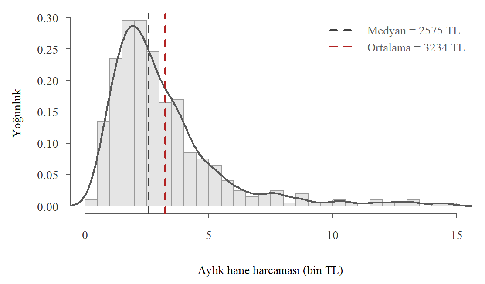
Özet istatistikler:
summary(hane_ornek$aylik_harcama) Min. 1st Qu. Median Mean 3rd Qu. Max.
408 1697 2575 3234 3845 17587 Histogram ve yoğunluk grafiğinden de görüleceği gibi (bkz. Şekil 5.5) aylık hane harcamaları sağa çarpık bir dağılıma sahiptir. Örneklem ortalaması (3234 TL) medyan hane harcamasından (2575 TL) daha büyüktür. Hanelerin yaklaşık yüzde 75 kadarının aylık harcaması 3845 TL altındadır.
harcama_q <- quantile(hane_ornek$aylik_harcama, p = c(0.1, 0.9, 0.95, 0.98))
harcama_q 10% 90% 95% 98%
1129.766 5753.729 7916.579 11716.585 Hanelerin yüzde 10 kadarı ayda yaklaşık 1130 TL altında harcama yapmaktadır. Dağılımın diğer ucunda, hanelerin yüzde 5 kadarı 7917 TL üzerinde, yüzde 2 kadarı ise 11717 TL üzerinde harcama yapmaktadır.
Bir veri kümesindeki merkezi eğilimin yanı sıra, değerlerin ne kadar yayıldığını ya da birbirinden ne kadar farklı olduğunu belirlemek, verilerin doğasını anlamak için önemlidir. Değişkenlik ölçüleri, bu yayılımı ölçmek ve verilerin dağılımı hakkında bilgi sahibi olmak için kullanılır.
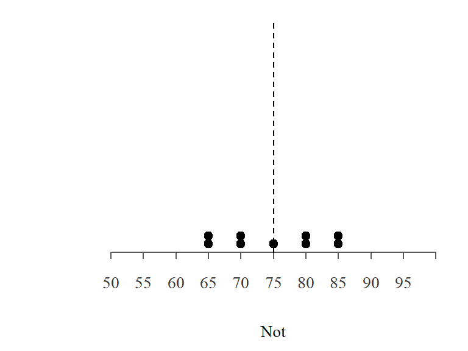
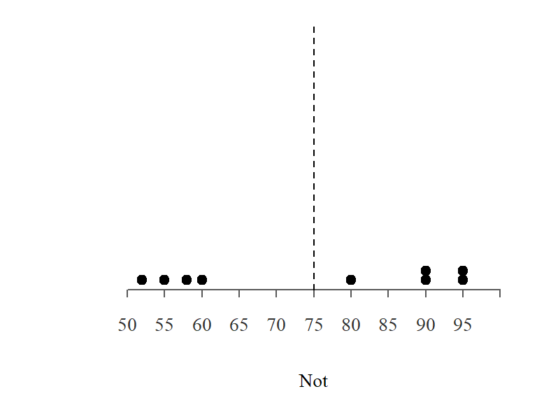
Şekil 5.6 iki sınav sonucuna ilişkin notları göstermektedir. Her iki sınavın ortalaması 75’tir. Birinci sınavın notları ortalama çevresinde daha dar bir aralıkta dağılmaktadır. İkinci sınavın sonuçları ise daha geniş bir aralıkta değerler almaktadır.
Aralık (range), verideki en büyük ve en küçük değer arasındaki farktır. Sıralanmış gözlemlerde \[ \mbox{Aralık} = x_{(n)} - x_{(1)} \] formülüyle kolayca bulunabilir. Şekil 5.6 verilerine göre birinci sınavın aralığı \(85-65=20\), ikinci sınavın aralığı ise \(95-52=43\) olarak bulunur. Ortalaması aynı olan bu veri kümelerinde aralığı daha geniş olan daha yüksek değişkenliğe sahiptir diyebiliriz.
Aralık ölçüsü değerlerin genel dağılımı hakkında bir fikir verse de tek başına çok kısıtlı bir bilgi sağlar. Özellikle uç değerlerin varlığı aralığı doğrudan etkiler. Örneğin notları 0 ve 100 olan iki öğrenci olsaydı aralık 100 olurdu. Uç değerlere fazla duyarlı olduğu için aralık yerine dağılımın yüzde ellilik orta kısmındaki değerler aralığına bakmak isteyebiliriz. Buna kartiller aralığı denir.
Kartiller, daha önce tanımladığımız gibi, gözlemlerin dört eşit parçaya bölündüğü noktalardır. Veriler küçükten büyüğe sıralandığında, ilk, ikinci (medyan), ve üçüncü kartiller hesaplanır. Kartiller aralığı üçüncü kartil ile birinci kartil arasındaki fark olarak tanımlanır:
\[ IQR = Q_3-Q_1 \tag{5.6}\] Burada \(Q_3\) gözlemlerin %75’inin küçük olduğu üçüncü kartil değerini, \(Q_1\) ise %25’inin küçük olduğu birinci kartil değerini göstermektedir.
Örnek 5.21 13 öğrencinin not verisi aşağıdaki gibidir.
not <- c(48, 55, 87, 58, 63, 77, 90, 68, 85, 80, 60, 52, 66)
rbind(sira = 1:length(not), sirali_not = sort(not)) [,1] [,2] [,3] [,4] [,5] [,6] [,7] [,8] [,9] [,10] [,11] [,12] [,13]
sira 1 2 3 4 5 6 7 8 9 10 11 12 13
sirali_not 48 52 55 58 60 63 66 68 77 80 85 87 90Buna göre medyan (\(Q_2\)) yedinci sıradaki değerdir: 66. Birinci ve üçüncü kartiller ise
kartiller <- quantile(not, probs = c(0.25, 0.5, 0.75), type = 6)
kartiller 25% 50% 75%
56.5 66.0 82.5 \(Q_1=56.5\) ve \(Q_3=82.5\) olarak bulunur. Öğrencilerin %25’i 56.5’ten, %75’i 82.5’ten düşük not almıştır. Bu ikisi arasındaki fark
iqr <- kartiller[3] - kartiller[1]
iqr75%
26 kartiller aralığıdır, \(IQR=26\). Bu değer dağılımın ortasında yer alan gözlemlerin aralığı olarak düşünülebilir. Özellikle uç değerlerin varlığı durumunda aralık yerine kartiller aralığı tercih edilebilir.
R’ın IQR() fonksiyonu öntanımlı olarak type = 7 yöntemini kullandığı için bu veri için farklı bir değer verir: IQR(not) sonucu 22 olur. Küçük veri kümelerinde kartil yöntemleri arasındaki bu farklar olağandır; hesap yaparken hangi yöntemin kullanıldığını belirtmek gerekir. Kartiller aralığını tutan nesneye IQR adını vermediğimize de dikkat ediniz; bu ad R’daki fonksiyonun adını gölgelerdi.
Kutu ya da kutu-bıyık (box-whiskers) çizimi olarak da adlandırılan bu grafik, verinin dağılımını beş sayı özetinden hareketle gösterir. Beş sayı özeti en küçük değer (\(x_{(1)}\)), birinci kartil (\(Q_1\)), medyan (\(Q_2\)), üçüncü kartil (\(Q_3\)) ve en büyük değerden (\(x_{(n)}\)) oluşur. R’ın boxplot() ve fivenum() fonksiyonları kartilleri Tukey’in menteşe (hinge) yöntemiyle hesaplar. Bu değerler küçük veri kümelerinde quantile() sonuçlarından biraz farklı olabilir.
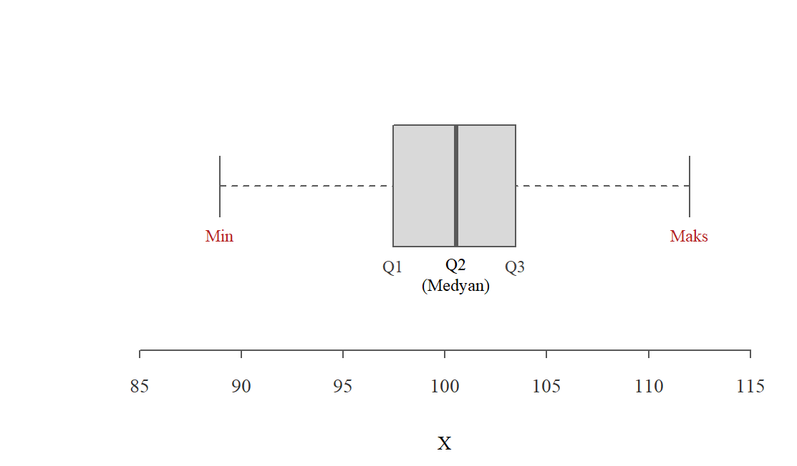
Şekil 5.7 uç değerlerin (outlier) olmadığı bir veri kümesinin kutu çizimini göstermektedir. Kutu \(Q_1\) ile \(Q_3\) arasında uzanır ve gözlemlerin ortadaki yüzde ellisini kapsar; kutunun genişliği kartiller aralığıdır (IQR). Kutunun içindeki çizgi medyanı gösterir. Bıyıklar kutunun iki ucundan dışarı doğru en fazla \(1.5\times IQR\) mesafeye kadar uzanır. Alt bıyık \(Q_1-1.5\times IQR\) sınırının içinde kalan en küçük gözleme, üst bıyık \(Q_3+1.5\times IQR\) sınırının içinde kalan en büyük gözleme kadar çizilir. Bu sınırların dışında kalan gözlemler uç değer olarak kabul edilir ve bıyıkların ötesinde tek tek noktalarla gösterilir. Bu veride hiç uç değer olmadığı için bıyıklar en küçük ve en büyük gözlemde biter. Şekil 5.8 ise uç değerlerin bulunduğu bir veri kümesine aittir. Burada bıyıkların ötesindeki noktalar uç değerleri göstermektedir.
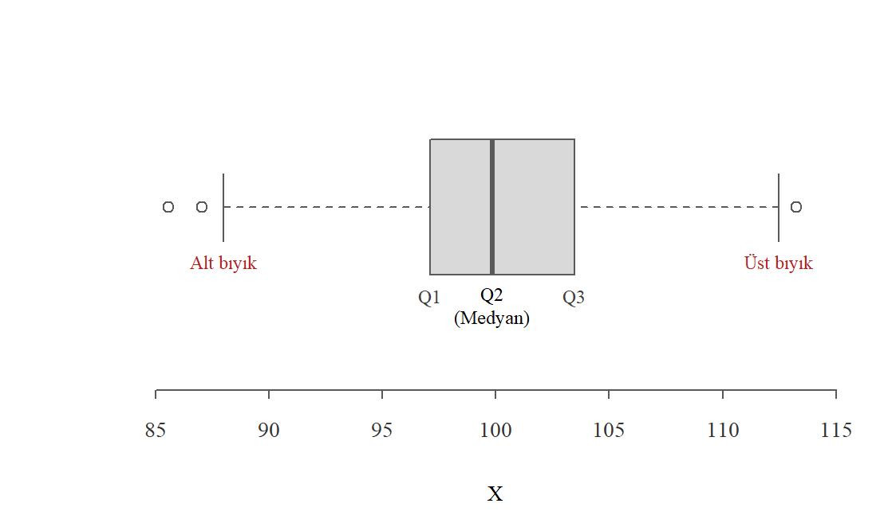
R’da kutu çizimi için boxplot() fonksiyonu kullanılabilir (bkz. Şekil 5.9):
#|
load("Data/mutluluk.rda")
boxplot(x = mutluluk$mutluluk,
xlab = "",
ylim = c(40,80),
ylab = "Mutluluk endeksi"
)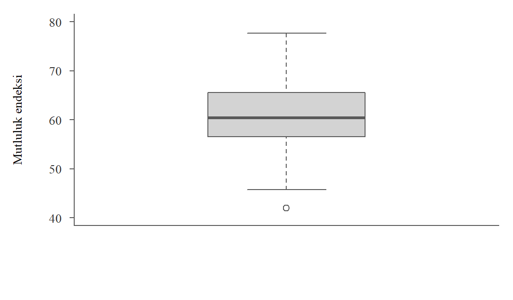
Mutluluk endeksinin kutu grafiğini 5-sayı özeti ile birlikte yorumlayabiliriz.
# min Q1 median Q3 max
fivenum(mutluluk$mutluluk)[1] 41.98 56.54 60.39 65.57 77.66summary(mutluluk$mutluluk) Min. 1st Qu. Median Mean 3rd Qu. Max.
41.98 56.54 60.39 61.15 65.57 77.66 Buna göre en düşük mutluluk düzeyi 42.0, birinci kartil 56.5, medyan 60.4, üçüncü kartil 65.6 ve en yüksek mutluluk düzeyi 77.7 olarak bulunur. Medyan ve ortalamanın birbirine yakın olması mutluluğun yaklaşık olarak simetrik dağıldığına işaret etmektedir. Kutu çiziminde medyan çizgisinin kartiller aralığını gösteren dikdörtgeni yaklaşık iki eşit parçaya ayırdığına dikkat ediniz.
Örnek 5.22 Kutu çizimleri grupları karşılaştırırken özellikle kullanışlıdır. Şekil 5.10 sipariş tutarlarını ürün kategorilerine göre göstermektedir. Kategoriler arasında tutar düzeyleri çok farklı olduğu için yatay ekseni logaritmik ölçekte çizdik.
par(mar = c(4.2, 8.5, 0.8, 0.8))
boxplot(tutar ~ kategori, data = eticaret, horizontal = TRUE, log = "x",
las = 1, cex.axis = 0.85, col = "gray85", pch = 20, cex = 0.4,
xlab = "Sipariş tutarı (TL, logaritmik ölçek)", ylab = "")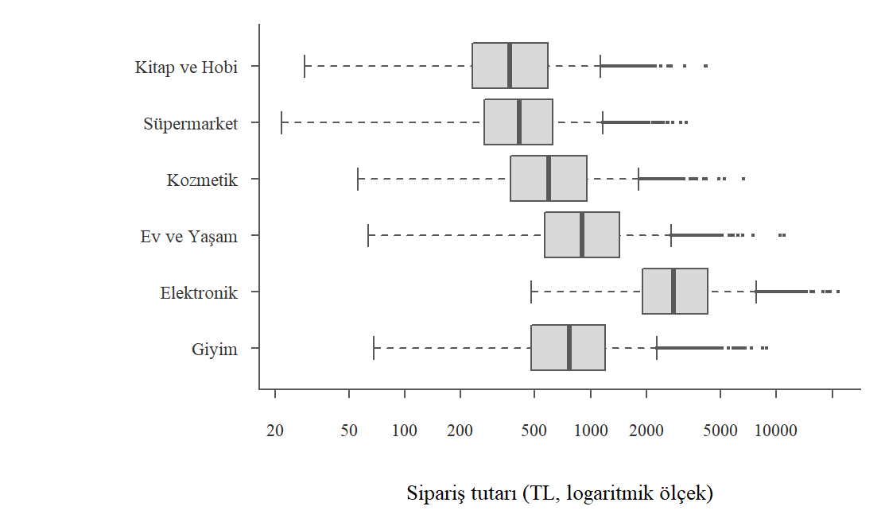
Medyan tutar elektronik siparişlerinde 2802 TL ile en yüksek, kitap ve hobi siparişlerinde 366 TL ile en düşüktür. Grafikte bıyıkların dışında çok sayıda nokta dikkat çekmektedir. Kutu çizimi kuralı toplam 949 siparişi uç değer olarak işaretlemiştir. Bu siparişler hatalı kayıtlar değildir. Tutar sağa çarpık bir değişken olduğu için dağılımın uzun sağ kuyruğundaki büyük siparişler kuralın sınırlarının dışına düşer. Sağa çarpık bir değişkende çok sayıda uç değer işaretlenmesi olağandır ve bu gözlemleri silmek için bir gerekçe değildir.
Varyans bir veri kümesinde merkez çevresindeki değişkenliğin bir ölçüsüdür. Verilerin anakütleye ya da örnekleme ait olmasına göre farklı şekilde tanımlanır. Örneklem ya da anakütle varyansını hesaplamanın ilk adımı her bir gözlem değerinin ortalamaya olan uzaklığının hesaplanmasıdır.
Ortalaması \(\mu=\sum_i X_i/N\) olan bir anakütlede gözlem değerlerini \((X_1, X_2,\ldots,X_N)\) ile gösterelim. Tipik elemanı \(X_i\) olan bu gözlem kümesinde her bir değerin anakütle ortalaması ile farkını, \(X_i-\mu\), hesaplayabiliriz. Böylece her bir gözlemin \[ (X_1-\mu),(X_2-\mu),(X_3-\mu),\ldots,(X_N-\mu) \] merkeze olan uzaklığını bulabiliriz. Fark pozitif işaretliyse bu gözlemin ortalamanın üzerinde, negatif işaretliyse ortalamanın altında olduğunu gösterir. Mutlak büyüklüğü ise uzaklığa ilişkin bilgi içerir.
Bu farklardan hareketle bir değişkenlik ölçütü oluşturabilir miyiz? Ortalamadan farkların toplamını aldığımızı düşünelim:
\[\begin{align} \nonumber \sum_{i=1}^N (X_i-\mu)&= (X_1-\mu)+(X_2-\mu)+(X_3-\mu)+\ldots +(X_N-\mu)\\ &= (X_1+X_2+X_3+\ldots+X_N)-N\mu\\ \nonumber &= N\mu - N\mu\\ \nonumber &= 0 \end{align}\]
Burada \(X_i\)’lerin toplamının tanım gereği \(N\mu\) olduğuna dikkat ediniz. Bu farkların toplamı, gözlem kümesi ne olursa olsun 0 olduğu için bir değişkenlik ölçütü olamaz.
Ortalamadan büyük ve küçük olan gözlemlere eşit ağırlık veren bir değişkenlik ölçütü geliştirmenin bir yolu bu farkların karesini almaktır: \[ (X_1-\mu)^2,(X_2-\mu)^2,(X_3-\mu)^2,\ldots,(X_N-\mu)^2 \] Ortalamadan uzaklığın karelerinin toplamından hareketle bir değişkenlik ölçütü oluşturabiliriz. Buna varyans adı verilir.
Tanım 5.6 (Anakütle varyansı, \(\sigma^2\)) Anakütle varyansı, gözlem değerlerinin anakütle ortalamasına olan uzaklığının karelerinin toplamının gözlem sayısına bölünmesiyle bulunur: \[ \sigma^2 =\frac{1}{N}\sum_{i=1}^N (X_i-\mu)^2 \tag{5.7}\]
Genellikle \(\sigma^2\) ile gösterilir ve sigma-kare şeklinde okunur. Varyans hiçbir zaman negatif olamaz. Tüm gözlemler aynı değere eşitse, yani sabit gözlemler için varyans 0 olur.
Aşağıda verilen kısa yol formülüyle ortalamadan farkları almadan da varyansı hesaplayabiliriz:
\[\begin{align} \nonumber \sigma^2 &= \frac{1}{N}\sum_{i=1}^N (X_i-\mu)^2\\ \nonumber &= \frac{1}{N}\sum_{i=1}^N (X_i^2-2\mu X_i + \mu^2)\\ &= \frac{1}{N}\sum_{i=1}^N X_i^2-2\mu \frac{1}{N}\sum_{i=1}^N X_i + \frac{1}{N}N\mu^2\\ \nonumber &= \frac{1}{N}\sum_{i=1}^N X_i^2-2\mu^2 + \mu^2\\ \nonumber &= \frac{1}{N}\sum_{i=1}^N X_i^2-\mu^2 \end{align}\]
Örnek 5.23 \(X\) değişkeninin anakütle değerleri \((65,70,75,80,85,80,85,65,70)\) olsun. Anakütle ortalaması \(\mu = 75\) olmak üzere Tablo 5.2 varyans hesaplaması için gerekli büyüklükleri göstermektedir.
| \(i\) | \(X_i\) | \(X_i - \mu\) | \((X_i - \mu)^2\) | \(X_i^2\) |
|---|---|---|---|---|
| 1 | 65 | -10 | 100 | 4225 |
| 2 | 70 | -5 | 25 | 4900 |
| 3 | 75 | 0 | 0 | 5625 |
| 4 | 80 | 5 | 25 | 6400 |
| 5 | 85 | 10 | 100 | 7225 |
| 6 | 80 | 5 | 25 | 6400 |
| 7 | 85 | 10 | 100 | 7225 |
| 8 | 65 | -10 | 100 | 4225 |
| 9 | 70 | -5 | 25 | 4900 |
| Toplam | 675 | 0 | 500 | 51125 |
Bu tablodan hareketle anakütle varyansı \[ \sigma^2 =\frac{1}{N}\sum_{i=1}^N (X_i-\mu)^2 = 500/9=55.56 \] olarak bulunur. Kısa yol formülünü kullanarak \[ \sigma^2 = \frac{1}{N}\sum_{i=1}^N X_i^2-\mu^2 = 51125/9 - 75^2 = 55.56 \] aynı sonuca ulaşılabilir.
Benzer şekilde, örneklem varyansı gözlemlerin örneklem ortalamasından farkının kareler toplamına dayanır. Elimizde bir örneklem olduğu için anakütle ortalamasını \(\mu\) bilmeyiz. Bu nedenle varyans formülünde \(\mu\) için iyi bir tahminci kullanmamız gerekir. Anakütle ortalamasının yansız bir tahmincisi örneklem ortalamasıdır. Böylece ölçütümüzü her bir örneklem değerinin aritmetik ortalamaya olan uzaklığının karesine dayandırabiliriz.
\(n\) gözlemli bir örneklemi \((x_1, x_2,\ldots,x_n)\) ile gösterelim. Örneklem ortalaması \(\bar{x}=\sum_i x_i/n\) olsun. Tipik elemanı \(x_i\) olan bu gözlem kümesinde her bir değerin örneklem ortalaması ile farkını, \(x_i-\bar{x}\), hesaplayabiliriz. Böylece her bir gözlemin \[ (x_1-\bar{x}),(x_2-\bar{x}),(x_3-\bar{x}),\ldots,(x_n-\bar{x}) \] örneklem ortalamasına ne kadar uzak olduğunu bulabiliriz. Anakütle ortalamasından farkların toplamının 0 olduğunu göstermiştik. Örneklem ortalamasından farkların toplamının da 0 olduğu kolayca gösterilebilir:
\[\begin{align} \nonumber \sum_{i=1}^n (x_i-\bar{x})&= (x_1-\bar{x})+(x_2-\bar{x})+(x_3-\bar{x})+\ldots +(x_n-\bar{x})\\ &= (x_1+x_2+x_3+\ldots+x_n)-n \bar{x}\\ \nonumber &= n \bar{x} - n \bar{x}\\ \nonumber &= 0 \end{align}\]
Tanım 5.7 (Örneklem varyansı, \(s^2\)) \(n\) gözlemli bir veri kümesi için örneklem varyansı \[ s^2 =\frac{1}{n-1}\sum_{i=1}^n (x_i-\bar{x})^2 \tag{5.8}\] olarak tanımlanır. Burada fark karelerinin toplamının gözlem sayısına değil, \(n-1\)’e bölündüğüne dikkat ediniz. Daha sonra ayrıntılı olarak inceleyeceğimiz gibi, örneklem varyansı, \(s^2\), bilinmeyen anakütle varyansının sapmasız/yansız bir tahmincisidir.
Örneklem varyansının kısa yol formülü aşağıda türetilmiştir:
\[\begin{align} \nonumber s^2 &= \frac{1}{n-1}\sum_{i=1}^n (x_i-\bar{x})^2\\ \nonumber &= \frac{1}{n-1}\sum_{i=1}^n (x_i^2-2\bar{x} x_i + \bar{x}^2)\\ &= \frac{1}{n-1}\left( \sum_{i=1}^n x_i^2 - 2\bar{x} \sum_{i=1}^n x_i + n\bar{x}^2 \right)\\ \nonumber &= \frac{1}{n-1}\left( \sum_{i=1}^n x_i^2-2n\bar{x}^2 + n\bar{x}^2 \right)\\ \nonumber &= \frac{1}{n-1}\left( \sum_{i=1}^n x_i^2-n\bar{x}^2 \right) \end{align}\]
Örnek 5.24 Hanehalkı anakütlesinden 7 gözlemli bir örneklem rassal olarak çekilmiştir. Hanelerin aylık harcama tutarları TL cinsinden aşağıda verilmiştir: \[ \{2600, 3600, 2150, 3600, 5250, 2350, 3200\} \]
| \(i\) | \(x_i\) | \(x_i - \bar{x}\) | \((x_i - \bar{x})^2\) | \(x_i^2\) |
|---|---|---|---|---|
| 1 | 2600 | -650 | 422500 | 6760000 |
| 2 | 3600 | 350 | 122500 | 12960000 |
| 3 | 2150 | -1100 | 1210000 | 4622500 |
| 4 | 3600 | 350 | 122500 | 12960000 |
| 5 | 5250 | 2000 | 4000000 | 27562500 |
| 6 | 2350 | -900 | 810000 | 5522500 |
| 7 | 3200 | -50 | 2500 | 10240000 |
| Toplam | 22750 | 0 | 6690000 | 80627500 |
Örneklem ortalaması \(\bar{x}=22750/7=3250\) TL’dir. Örneklem varyansı \[ s^2 =\frac{1}{n-1}\sum_{i=1}^n (x_i-\bar{x})^2=\frac{1}{7-1}\times 6690000=1115000 \] olarak bulunur. Kısa yol formülüyle de bulunabilir: \[\begin{align} \nonumber s^2 &= \frac{1}{n-1}\left( \sum_{i=1}^n x_i^2-n\bar{x}^2 \right)\\ &= \frac{1}{7-1}\left( 80627500-7\cdot 3250^2\right) \\ \nonumber &= \left( 80627500-73937500\right)/6\\ \nonumber &= 1115000 \end{align}\]
R ile harcama verisi için örneklem varyansını hesaplayalım:
harcama <- c(2600, 3600, 2150, 3600, 5250, 2350, 3200)
ort <- mean(harcama)
df <- data.frame(x = harcama,
x_xbar = harcama-ort,
x_xbar2 = (harcama-ort)^2,
x2 = harcama^2)
df x x_xbar x_xbar2 x2
1 2600 -650 422500 6760000
2 3600 350 122500 12960000
3 2150 -1100 1210000 4622500
4 3600 350 122500 12960000
5 5250 2000 4000000 27562500
6 2350 -900 810000 5522500
7 3200 -50 2500 10240000Buradan örneklem varyansı
n <- length(harcama)
sum(df[, "x_xbar2"])/(n-1)[1] 1115000olur. Örneklem varyansı var() fonksiyonu ile de bulunabilir:
var(harcama)[1] 1115000Varyans (örneklem ya da anakütle) sadece negatif olmayan değerler alır, yani ya 0 olur ya da pozitif değerler alır. Varyansın 0 olması verilerde değişkenlik olmadığı anlamına gelir (sabit değerlerden oluşur). Diğer taraftan varyansın mutlak yorumu karelerinin alınmasından dolayı zordur. Verilerin ölçü birimi cinsinden yorumu kolaylaştırmak için standart sapma kullanılabilir.
Harcama verisinde ortalama 3250 TL’ye karşılık varyans 1115000 olarak bulunmuştu. Bu değeri nasıl yorumlayabiliriz? Varyansın tanımında ortalamaya uzaklığın karesini aldığımız için değişkenin ölçü birimi ile yorum yapamayız. Orijinal ölçü birimine dönmek için varyansın karekökünü alabiliriz. Böylece hanelerin aylık harcaması ortalama 3250 TL ve standart sapması yaklaşık 1056 TL’dir diyebiliriz.
Tanım 5.8 (Anakütle standart sapması, \(\sigma\)) Anakütle standart sapması, anakütle varyansının (pozitif) kareköküdür:
\[ \sigma = \sqrt{\sigma^2} =\sqrt{\frac{1}{N}\sum_{i=1}^N (X_i-\mu)^2} \tag{5.9}\]
Tanım 5.9 (Örneklem standart sapması, \(s\)) Örneklem standart sapması, örneklem varyansının (pozitif) kareköküdür:
\[ s = \sqrt{s^2} =\sqrt{\frac{1}{n-1}\sum_{i=1}^n (x_i-\bar{x})^2} \tag{5.10}\]
Standart sapma verilerin yayılımını daha kolay yorumlamak için kullanılabilir. Daha düşük bir standart sapma, verilerin ortalamaya daha yakın dağıldığını, yüksek bir standart sapma ise verilerin daha geniş bir aralıkta yayıldığını gösterir.
Anakütle standart sapmasını yorumlamanın bir yolu, verilerin ne kadarının ortalamadan kaç standart sapma uzağında olduğunun bulunmasıdır. Chebyshev teoremi ya da kuralı bunun için her anakütle için geçerli bir yol sunar.
Teorem 5.1 (Chebyshev) Ortalaması \(\mu\) ve standart sapması \(\sigma\) olan bir anakütlede, \(k>1\) olmak üzere, verilerin en az \[ \% ~\left( 1-\frac{1}{k^2} \right)\times100 \tag{5.11}\] kadarı ortalamadan en çok \(k\) standart sapma uzaklıktadır.
Örneğin, \(k=2\) ise, verilerin \(\%~100(1-1/4)=\% ~75\) kadarı 2 standart sapma içinde yer alır. Alt sınırı \(\mu-2\sigma\) ve üst sınırı \(\mu+2\sigma\) olan bir aralık belirlersek verilerin en az %75’i bu aralık içinde yer alacaktır.
Benzer şekilde \(k=3\) ise verilerin en az %\(100(1-1/9)\), yani %88.89 kadarı 3 standart sapma içinde yer alır.
Chebyshev teoremi simetrik olsun olmasın her dağılım için geçerlidir, ama yalnızca bir alt sınır verir. Dağılım çan biçimliyse, yani normal dağılıma yakınsa, çok daha dar bir sonuç söylenebilir. Buna ampirik kural denir. Simetri tek başına yetmez; örneğin tekdüze dağılım simetriktir ama gözlemlerinin yalnızca yaklaşık %58’i ortalamadan en fazla bir standart sapma uzaklıktadır.
Teorem 5.2 (Ampirik kural (çan biçimli dağılım)) Çan biçimli simetrik dağılmış bir anakütle için verilerin yaklaşık
yer alır.
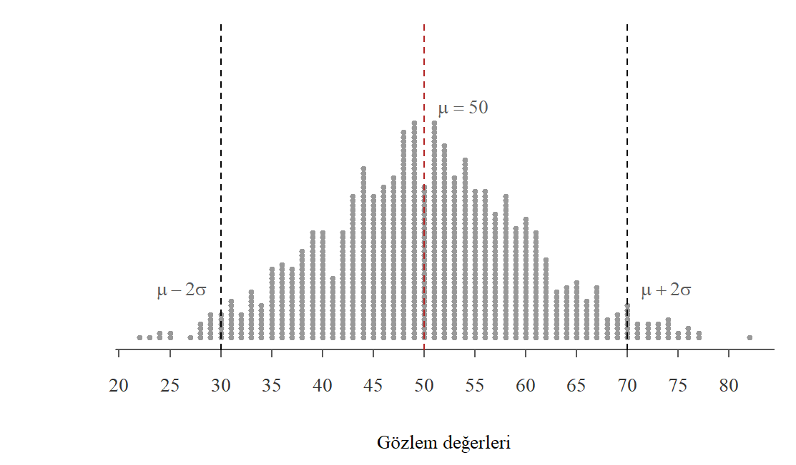
Örnek 5.25 Ortalaması \(\mu=50\) ve varyansı \(\sigma^2=100\) olan normal dağılmış bir anakütlede gözlemlerin %95’i \(\mu-2\sigma=30\) ve \(\mu+2\sigma=70\) aralığı içinde yer alır. Şekil 5.11 bu aralığı göstermektedir. Gözlemlerin %68’i bir standart sapma içinde, yani, 40-60 aralığında değerler almaktadır. Gözlemlerin neredeyse tamamı 3 standart sapma içindedir (20-80).
Örnek 5.26 Türkiye’de il düzeyinde 2015 yılı mutluluk verilerini düşünelim. 81 ilin tamamı gözlendiği için bu veri bir anakütledir. Ortalamayı ve standart sapmayı anakütle formülleriyle, yani \(N\) ile bölerek hesaplayalım:
load("Data/mutluluk.rda")
mutlu <- mutluluk$mutluluk
N_il <- length(mutlu)
mu_m <- mean(mutlu)
sigma_m <- sqrt(sum((mutlu - mu_m)^2) / N_il) # anakütle standart sapması
c(N = N_il, ortalama = mu_m, standart_sapma = sigma_m) N ortalama standart_sapma
81.000000 61.152840 7.486415 Dağılım hakkında başka bir bilgimiz olmadığını varsayalım. Mutluluk endeksinin ortalaması 61.2, standart sapması ise 7.5 olarak bulunur. Chebyshev teoremine göre illerin en az yüzde 75’inde mutluluk endeksi \(\mu-2\sigma=46.2\) ile \(\mu+2\sigma=76.1\) arasındadır. Dağılım çan biçimliyse bu oranın yaklaşık yüzde 95 olması beklenir. Bu aralıkta kalan illerin gerçek oranı ise yüzde 95.1 olarak bulunur.
Değişkenlik katsayısı (coefficient of variation, CV) verideki değişkenliğin ortalamaya göre ne kadar büyük olduğunu gösteren istatistiksel bir ölçüttür. Varyasyon ya da değişkenlik katsayısı, standart sapmanın, ortalamaya oranının yüzdesi olarak hesaplanır ve genellikle yüzde ile ifade edilir. Bu katsayı, birimlerden bağımsız olduğu için farklı birimlere sahip verileri karşılaştırmak için uygundur.
Tanım 5.10 (Anakütle değişkenlik katsayısı) Anakütle standart sapmasının anakütle ortalamasına oranı olarak \[ CV = 100\times \frac{\sigma}{\mu} \tag{5.12}\] tanımlanır.
Tanım 5.11 (Örneklem değişkenlik katsayısı) Örneklem standart sapmasının örneklem ortalamasına oranı olarak \[ \widehat{CV} = 100\times \frac{s}{\bar{x}} \tag{5.13}\] tanımlanır.
Görece yüksek bir değişkenlik katsayısı, gözlemlerin ortalamaya göre daha fazla yayıldığını gösterir. Bu katsayı yalnızca pozitif değerler alan oransal ölçekteki değişkenler için anlamlıdır (bkz. Tablo 3.3). Ortalaması sıfıra yakın olan ya da negatif değerler alabilen bir değişkende, örneğin Celsius cinsinden sıcaklıkta ya da enflasyon oranında, değişkenlik katsayısı yanıltıcı olur.
Örnek 5.27 Bir grup öğrencinin iki sınava ait sonuçları şöyledir: \[ \mbox{1. Sınav:}\quad \bar{x}=74,\quad s=8 \] \[ \mbox{2. Sınav:}\quad \bar{x}=52,\quad s=15 \] Örneklem değişkenlik katsayılarını bulun ve yorumlayın.
Çözüm: \[ \mbox{1. Sınav:}\quad \widehat{CV} = 100\times \frac{s}{\bar{x}}=100\times \frac{8}{74}=10.81 \] \[ \mbox{2. Sınav:}\quad \widehat{CV} = 100\times \frac{s}{\bar{x}}=100\times \frac{15}{52}=28.85 \] Buna göre 2. sınavın değişkenlik katsayısı daha yüksektir. İkinci sınavda notlar ortalamaya göre daha büyük değişkenlik gösterir. Bu oranlar, standart sapmanın büyüklüğünün tek başına yeterli olmadığını vurgular. Örneğin, her iki sınavın standart sapması aynı olsaydı bile, ortalamaları farklı olduğu için değişkenlik katsayıları farklı olurdu. CV yardımıyla iki farklı sınavın performanslarını ve göreceli değişkenliklerini daha anlamlı bir şekilde kıyaslayabiliyoruz.
Örnek 5.28 Ölçü birimleri farklı iki değişkenin değişkenliğini karşılaştıralım. Öğrenci anketi verisinde (ogrenci_anket, bkz. Tablo 3.4) öğrencilerin boyu santimetre, kilosu kilogram cinsinden ölçülmüştür.
load("Data/ogrenci_anket.RData")
ozet <- sapply(ogrenci_anket[, c("boy", "kilo")], function(x)
c(ortalama = mean(x, na.rm = TRUE), ss = sd(x, na.rm = TRUE)))
ozet <- rbind(ozet, cv = 100 * ozet["ss", ] / ozet["ortalama", ])
round(ozet, 1) boy kilo
ortalama 173.3 68.7
ss 9.7 15.6
cv 5.6 22.7Boyun standart sapması 9.7 cm, kilonun standart sapması 15.6 kg olarak bulunur. Birimler farklı olduğu için bu iki sayıyı doğrudan karşılaştıramayız. Değişkenlik katsayıları ise boy için yüzde 5.6, kilo için yüzde 22.7 kadardır. Öğrenciler boy bakımından birbirine görece yakın, kilo bakımından ise çok daha farklıdır.
Panel veride bir değişkenin değişkenliği iki kaynaktan gelir. Birincisi birimler arasındaki kalıcı farklardır. Örneğin bazı ülkelerde yaşam beklentisi bütün dönem boyunca yüksek, bazılarında düşüktür. İkincisi her birimin kendi içinde, zaman içinde gösterdiği değişimdir. Şekil 5.12 altı ülke için iki göstergeyi karşılaştırmaktadır.
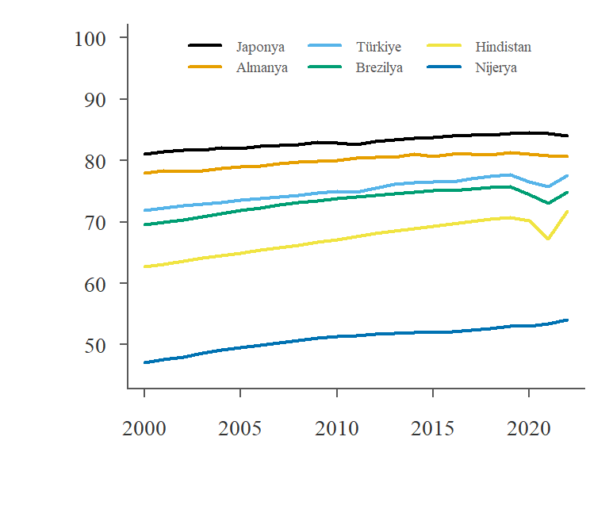
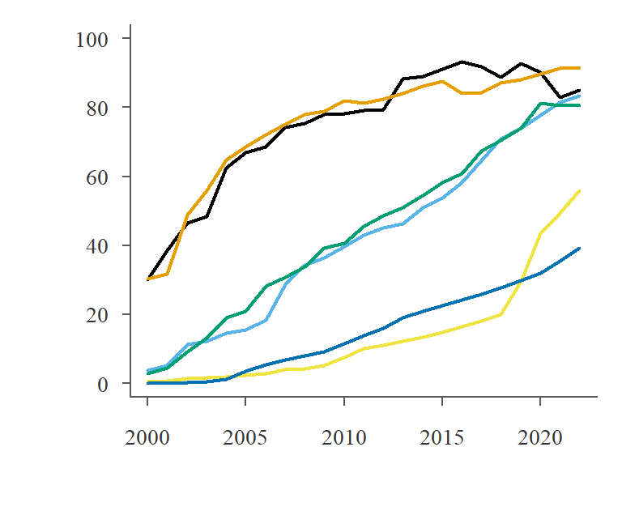
Yaşam beklentisi grafiğinde (Şekil 5.12 (a)) çizgiler birbirinden ayrıktır ve yaklaşık paralel ilerler. Ülkeler arasındaki farklar, bir ülkenin dönem içindeki değişiminden çok daha büyüktür. İnternet kullanımında (Şekil 5.12 (b)) ise bütün ülkelerde güçlü bir yükseliş vardır. Bir ülkenin 2000 ile 2022 arasındaki değişimi, ülkeler arasındaki farklar kadar büyüktür.
Bu gözlemi sayıya dökebiliriz. \(x_{it}\), ülke \(i\)’nin \(t\) yılındaki değerini, \(\bar{x}_i\) ülke \(i\)’nin dönem ortalamasını, \(\bar{x}\) ise bütün gözlemlerin genel ortalamasını göstersin. Her gözlemin genel ortalamadan farkı \(x_{it}-\bar{x} = (\bar{x}_i-\bar{x}) + (x_{it}-\bar{x}_i)\) biçiminde iki parçaya ayrılır. Bu farkların kareleri toplandığında da aynı ayrışma geçerlidir: \[ \underbrace{\sum_i \sum_t (x_{it}-\bar{x})^2}_{\text{toplam}} = \underbrace{\sum_i \sum_t (\bar{x}_i-\bar{x})^2}_{\text{ülkeler arası}} + \underbrace{\sum_i \sum_t (x_{it}-\bar{x}_i)^2}_{\text{ülke içi}} \tag{5.14}\] Ülkeler arası kareler toplamının toplam kareler toplamına oranı, değişkenliğin ne kadarının ülkeler arasındaki kalıcı farklardan kaynaklandığını gösterir. Aynı ayrışmayı Kısım II’de varyans analizini incelerken gruplar arası ve grup içi değişkenlik adıyla yeniden göreceğiz.
ulkeler_arasi_pay <- function(veri, degisken) {
d <- veri[!is.na(veri[[degisken]]), ]
x <- d[[degisken]]
ulke_ort <- ave(x, d$ulke) # her gözlemin karşısına kendi ülkesinin ortalaması
sum((ulke_ort - mean(x))^2) / sum((x - mean(x))^2)
}
paylar <- sapply(c("yasam_beklentisi", "issizlik", "internet", "enflasyon"),
function(v) ulkeler_arasi_pay(donem, v))
round(paylar, 3)yasam_beklentisi issizlik internet enflasyon
0.925 0.873 0.569 0.227 ave() fonksiyonu her gözlemin yanına ait olduğu grubun ortalamasını yazar. 2000-2022 döneminde yaşam beklentisindeki değişkenliğin yüzde 92 kadarı, işsizlik oranındaki değişkenliğin ise yüzde 87 kadarı ülkeler arasındaki farklardan gelmektedir. İnternet kullanımında bu pay yüzde 57 kadardır. Ülke içi değişkenliğin büyük bölümü bütün ülkelerde ortak olan yükselişten kaynaklanır. Enflasyonda ise ülkeler arası pay yalnızca yüzde 23 kadardır. Enflasyon bir ülkenin içinde yıldan yıla çok büyük dalgalanmalar gösterebilir. Bu dönemde bazı ülkelerde yıllık enflasyon yüzde 557 düzeyine kadar çıkmıştır.
Bu ayrım uygulamada da yol göstericidir. Yaşam beklentisindeki farkları açıklamak isteyen bir araştırmacı öncelikle ülkeleri birbirinden ayıran kalıcı özelliklere bakacaktır. Enflasyondaki değişkenliği açıklamak isteyen bir araştırmacı ise zaman içinde değişen koşullara odaklanacaktır.
Verilerin dağılımının simetrikliği, uçlarda ve merkezdeki davranışları (örneğin basıklık ve kuyruk kalınlığı), görsel araçlarla birlikte analiz edildiğinde anlamlı bilgiler sağlar. Bu bölümde, dağılımın şeklini betimleyen istatistikleri inceleyeceğiz. Özellikle histogram, kutu grafiği ve yoğunluk grafikleriyle çalışırken, bu biçim ölçülerini de kullanacağız.
Çarpıklık, bir dağılımın simetrik olup olmadığı hakkında bilgi verir. Simetrik bir dağılımın sağ ve sol tarafı birbirine benzer bir şekle sahiptir. Böyle bir dağılım için medyan değeri ortalama değerine eşittir.
Örneklem çarpıklık katsayısı \[ c = \frac{m_3}{s^3} = \frac{{\frac{1}{n} \sum_{i=1}^{n} (x_i - \bar{x})^3}}{{\left( \frac{1}{n-1} \sum_{i=1}^{n} (x_i - \bar{x})^2 \right)^{3/2}}} \tag{5.15}\] formülüyle hesaplanabilir. Burada \(c\) örneklem çarpıklık katsayısını, \(\bar{x}\) örneklem ortalamasını, \(s\) örneklem standart sapmasını göstermektedir. Payda yer alan \(m_3\), \(x\)’in örneklemdeki üçüncü merkezi momentidir. Payda her zaman pozitif değerler alırken, pay sıfır, negatif ya da pozitif olabilir: - \(c=0\) ise dağılım simetrik, - \(c>0\) ise pozitif-çarpık ya da sağa çarpık, - \(c<0\) ise sola-çarpıktır (negatif çarpık).
Tek tepeli ve simetrik dağılımlar için \[ \text{medyan}=\text{ortalama}=\text{mod} \] olur.
Sağa çarpık dağılımlarda genellikle \[ \text{ortalama} > \text{medyan} \] olur. Bunun nedeni sağa çarpık dağılımlarda büyük değerlerin fazla ağırlığa sahip olmasıdır.
Sola çarpık dağılımlarda ise genellikle \[ \text{medyan} > \text{ortalama} \] olur. Bu ilişkiler kesin bir kural değil, genel bir eğilimdir; özellikle kesikli ya da çok tepeli dağılımlarda bozulabilir.
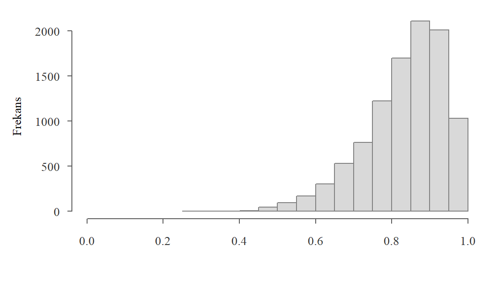
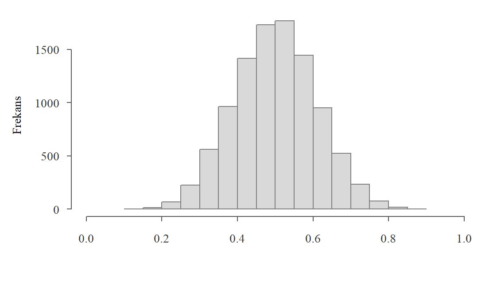
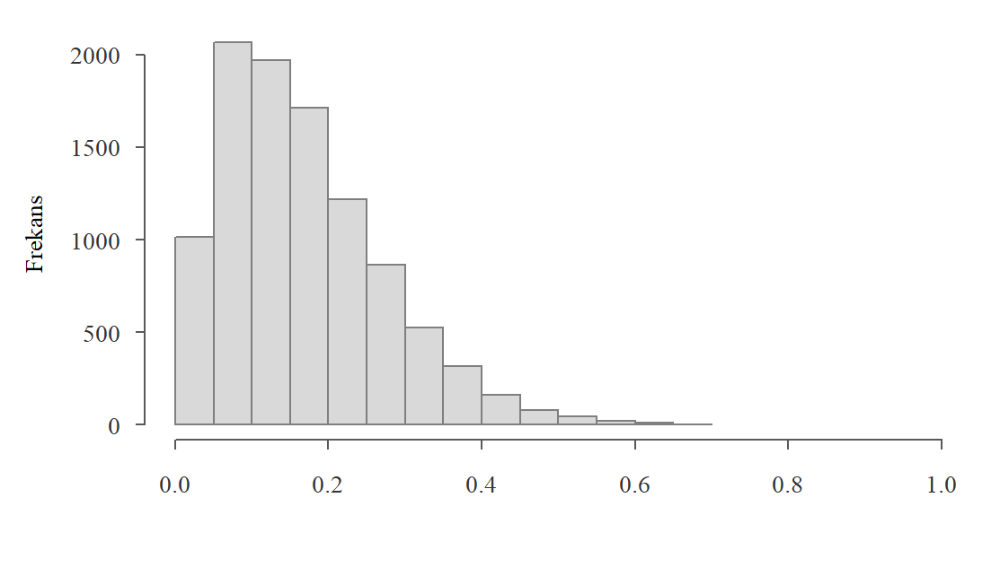
Histogramın (dağılımın) biçimi ile çarpıklık katsayısı (\(c\)) ilişkilidir. Çarpıklık katsayısı \(c\)’nin 0 olması dağılımın simetrik olduğu duruma işaret eder (Şekil 5.13 (b)). Çarpıklık katsayısının pozitif olması, yani pozitif çarpıklık, dağılımın sağ kuyruğunun sola göre daha uzun olduğunu gösterir (Şekil 5.13 (c)). Negatif çarpıklık ise sol kuyruğun sağa göre daha uzun olduğunu ifade eder (Şekil 5.13 (a)).
Örnek 5.29 Aşağıdaki not ortalaması verisinde çarpıklık katsayısını R ile hesaplayınız.
gpa <- c(3.2, 1.8, 2.5, 2.8, 3.7, 3.1, 2.9, 2.0, 3.5, 3.9)Denklem 5.15 formülündeki bileşenleri hesaplayalım:
gpa_ort <- mean(gpa)
gpa_medyan <- median(gpa)
gpa_s <- sd(gpa)
gpa_carpiklik <- sum((gpa - gpa_ort)^3) / (length(gpa) * gpa_s^3)
gpa_carpiklik[1] -0.2658297Çarpıklık katsayısı yaklaşık \(-0.27\) olarak bulundu. Bu değer negatif olduğu için dağılımın hafif sola çarpık olduğunu söyleyebiliriz. Örneklem ortalaması (2.94) medyandan (3) biraz daha küçük bulunmuştur.
Örneklem çarpıklık katsayısını hesaplayan aşağıdaki gibi bir R fonksiyonu da yazabiliriz:
# örneklem çarpıklık katsayısı için fonksiyon
# Bu fonksiyon, örneklemdeki üçüncü merkezi momenti ve standart sapmayı
# kullanarak çarpıklık katsayısını hesaplar
carpiklik <- function(x) {
n <- length(x)
mean_x <- mean(x)
sd_x <- sd(x)
carpiklik <- sum((x - mean_x)^3) / (n * sd_x^3)
return(carpiklik)
}Bu fonksiyonu kullanarak
carpiklik(gpa)[1] -0.2658297buluruz.
Örnek 5.30 Yukarıda yazdığımız carpiklik() fonksiyonunu kullanarak hanehalkı örneklemindeki aylık harcama değişkeninin çarpıklık katsayısını hesaplayınız. Örneklem ortalaması ve medyanını da hesaplayınız ve yorumlayınız.
carpiklik(hane_ornek$aylik_harcama)[1] 2.490824Aylık hane harcamasının çarpıklık katsayısı yaklaşık 2.49 olarak bulunmuştur. Bu değişken sağa çarpık bir dağılıma sahiptir. Başka bir ifadeyle hanelerin önemli bir kısmı düşük ve orta düzeydeki değerlerde yoğunlaşmıştır. Aylık harcama düzeyi arttıkça hane sayısı azalmaktadır.
Böyle bir dağılımda göreceli yüksek ve uç değerlerin varlığı ortalamanın yüksek çıkmasına neden olabilir. Bu değişken için
mean(hane_ornek$aylik_harcama)[1] 3234.281median(hane_ornek$aylik_harcama)[1] 2575.455örneklem ortalaması 3234.28 TL, örneklem medyanı ise 2575.46 TL olarak bulunmuştur. Tipik olarak ortalamanın medyandan büyük olması çarpıklığın pozitif olduğuna işaret eder. Genel olarak fertlerin ya da hanelerin gelir dağılımları sağ kuyruğun daha uzun olduğu, yani düşük ve orta gelirli gözlemlerin ağırlıkta olduğu bir davranışa sahiptir.
Çarpıklık dağılımın simetrikliğine ilişkin bilgi verir. Basıklık katsayısı ise kuyrukların (merkezden uzak değerlerin) dağılımına ilişkin bilgi içerir. Bu ölçüleri dağılım grafiklerini incelerken tekrar ele alacağız.
Basıklık, bir dağılımın tepesi etrafında nasıl yoğunlaştığını ve kuyrukların ne kadar uzun olduğunu belirten bir ölçüdür. Örneklem basıklık katsayısı \[ b = \frac{m_4}{m_2^2} = \frac{\frac{1}{n} \sum_{i=1}^{n} (x_i - \bar{x})^4}{\left(\frac{1}{n} \sum_{i=1}^{n} (x_i - \bar{x})^2\right)^2} \tag{5.16}\] formülüyle hesaplanabilir. Burada \(b\) örneklem basıklık katsayısını, \(\bar{x}\) örneklem ortalamasını göstermektedir. Payda yer alan ifade \(x\)’in örneklemdeki dördüncü merkezi momenti (\(m_4\)), paydadaki ise ikinci merkezi momentin (\(m_2\)) karesidir. Büyük örneklemlerde \(m_2\) ile \(s^2\) arasındaki fark ihmal edilebilir. Çarpıklık ve basıklık için küçük örneklemlerde farklı düzeltmeler kullanan başka formüller de vardır. Bu yüzden farklı yazılımlar aynı veri için birbirinden biraz farklı değerler raporlayabilir; büyük örneklemlerde bu farklar önemsizleşir. Basıklık katsayısı her zaman pozitif değerler alır.
Basıklık katsayısı genellikle normal dağılıma göre değerlendirilir. Normal dağılım için basıklık 3 değerini alır. Eğer \(b>3\) ise dağılım normal dağılıma göre daha sivri (leptokurtik) ve kuyrukları daha kalındır; uç değerler normal dağılımda beklenenden daha sık görülür. Tersi durumda \(b<3\) ise dağılım normale göre daha basık (platikurtik) ve kuyrukları daha incedir.
Örnek 5.31 Basıklık katsayısını hesaplayan kurtosis_hesapla() isimli bir R fonksiyonu yazınız. bist100.rda veri kümesinde yer alan getiri değişkeni için basıklık katsayısını hesaplayınız.
# Basıklık (kurtosis) hesaplayan fonksiyon
kurtosis_hesapla <- function(x) {
n <- length(x)
mean_x <- mean(x)
m4 <- sum((x - mean_x)^4) / n
s2 <- sum((x - mean_x)^2) / n
kurtosis <- m4 / (s2^2)
return(kurtosis)
}load("Data/bist100.rda")
kurtosis_hesapla(bist100$getiri[-1])[1] 8.066876Basıklık katsayısı yaklaşık 8.07 olarak bulunmuştur. Bu değer 3’ten büyük olduğu için normal dağılıma göre getirinin daha kalın kuyruklara sahip olduğunu söyleyebiliriz.
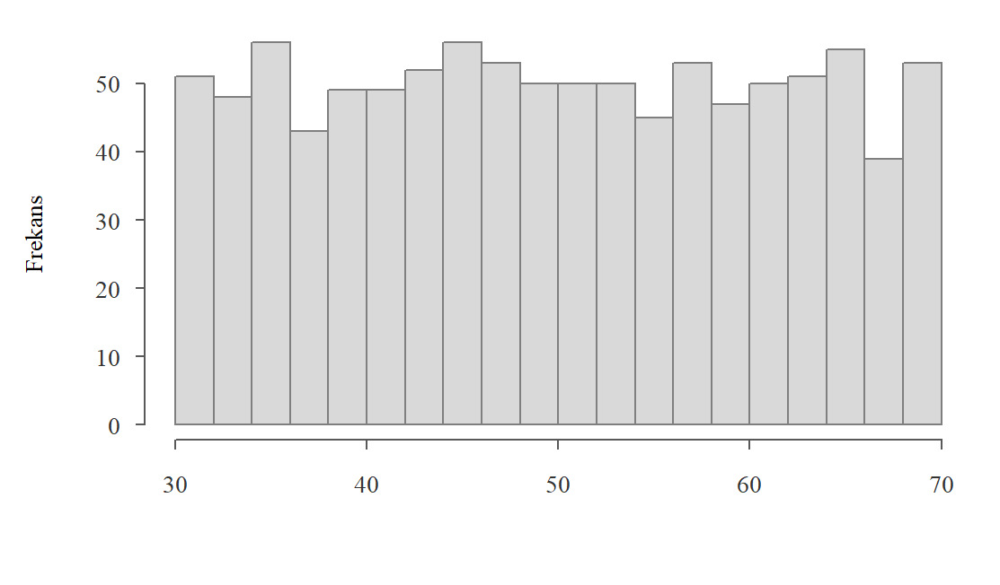
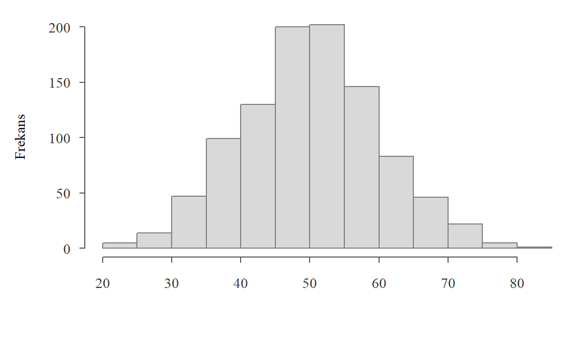
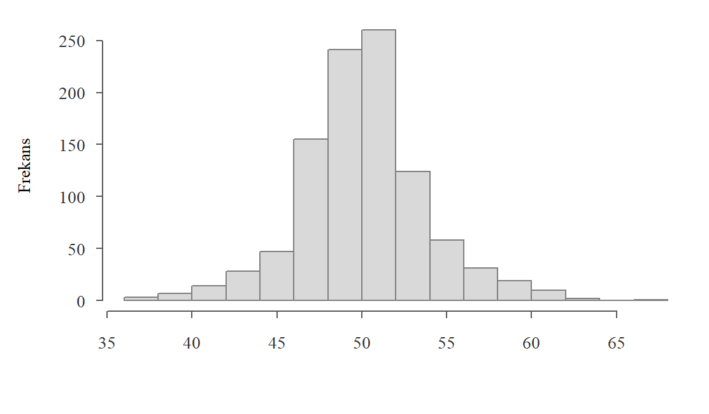
Şekil 5.14 basıklık katsayıları farklı üç dağılımı göstermektedir. Basıklık çoğu zaman tepe noktasının sivriliğiyle anlatılır, ancak katsayıyı asıl belirleyen kuyruklardaki gözlemlerdir, çünkü dördüncü kuvvet ortalamadan uzak gözlemlere çok büyük ağırlık verir.
Basık (platikurtik) dağılımlarda tepe geniş ve düzdür, kuyruklar ise incedir; ortalamadan çok uzak gözlem azdır. Tekdüze dağılım buna örnektir (Şekil 5.14 (a)) ve basıklık katsayısı 3’ten küçüktür. Normal (mezokurtik) dağılımın basıklık katsayısı 3’tür (Şekil 5.14 (b)). Sivri (leptokurtik) dağılımlarda ise tepe daha keskin, kuyruklar daha kalındır; ortalamadan çok uzak gözlemler normal dağılımda beklenenden daha sık görülür. Bu dağılımların basıklık katsayısı 3’ten büyüktür (Şekil 5.14 (c)).
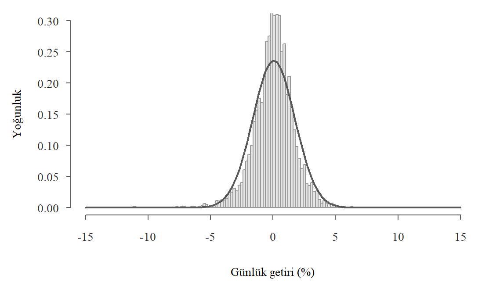
Basıklık kavramı dağılımın kuyruklardaki ve merkezdeki davranışını incelemede önemlidir. Özellikle verinin uçlardaki davranışı, çeşitli analizler için önemli olabilir. Örneğin bazı finansal varlık getirilerinin dağılımı kalın kuyruklu (leptokurtik) olma eğilimindedir. Böyle bir dağılım, normal dağılıma göre daha sivri bir tepe ve daha kalın kuyruklara sahip olur. Şekil 5.15 BIST100 endeksinin günlük getirilerinin histogramını göstermektedir. Karşılaştırma amacıyla normal dağılımın yoğunluğu da grafiğe eklenmiştir. Bu getiriler için basıklık katsayısı 8.07 olarak bulunmuştur. Normal dağılıma kıyasla, çoğu getiri değerinin ortalamaya yakın gerçekleştiğini, ancak uç olayların (aşırı kazanç veya kayıplar) normalden daha sık görüldüğünü söyleyebiliriz.
Kutu çiziminin bir eksikliği, dağılımın biçimi hakkında sınırlı bilgi vermesidir. Örneğin iki tepeli bir dağılımın kutu çizimi, tek tepeli bir dağılımınkinden pek farklı görünmeyebilir. Keman grafiği bu eksikliği gidermek için kutu çizimini yoğunluk eğrisiyle birleştirir. Yoğunluk eğrisi bir eksenin iki yanına ayna görüntüsü olarak çizilir; gözlemlerin yoğun olduğu bölgeler geniş, seyrek olduğu bölgeler dar görünür. Ortaya da dar bir kutu çizimi yerleştirilir.
Temel R’da keman grafiği için hazır bir fonksiyon yoktur, ama density(), polygon() ve boxplot() fonksiyonlarıyla kolayca çizilebilir:
keman <- function(x, xlab = "") {
yog <- density(x)
plot(NA, xlim = range(yog$x), ylim = c(-1.1, 1.1) * max(yog$y),
xlab = xlab, ylab = "", yaxt = "n")
# yoğunluk eğrisi ve ayna görüntüsü
polygon(c(yog$x, rev(yog$x)), c(yog$y, -rev(yog$y)), col = "gray90", border = "gray40")
# ortaya dar bir kutu çizimi
boxplot(x, horizontal = TRUE, add = TRUE, at = 0, boxwex = 0.4 * max(yog$y),
col = "gray60", outline = FALSE, axes = FALSE)
}Şekil 5.16 kutu çizimi örneğinde kullandığımız 400 gözlemlik veriyi göstermektedir. Yoğunluk eğrisi dağılımın yaklaşık simetrik ve tek tepeli olduğunu gösteriyor.
set.seed(1)
x_tek <- 5 * rnorm(400) + 100
keman(x_tek, xlab = "Değerler")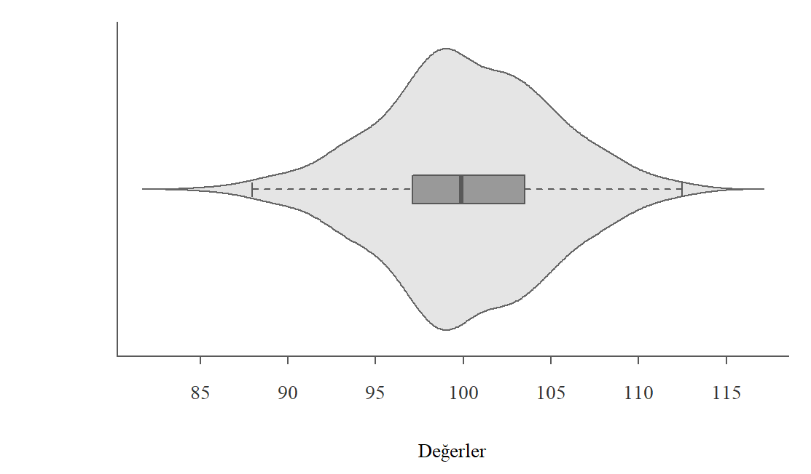
Şekil 5.17 ise iki tepeli bir dağılımı göstermektedir. Kutu çizimi yalnızca kartilleri gösterdiği için iki tepeyi fark ettirmez; yoğunluk eğrisi ise iki ayrı yoğunlaşmayı açıkça ortaya koyar.
set.seed(123)
x_iki <- c(rnorm(100, mean = 20, sd = 5), rnorm(100, mean = 40, sd = 5))
keman(x_iki, xlab = "Değerler")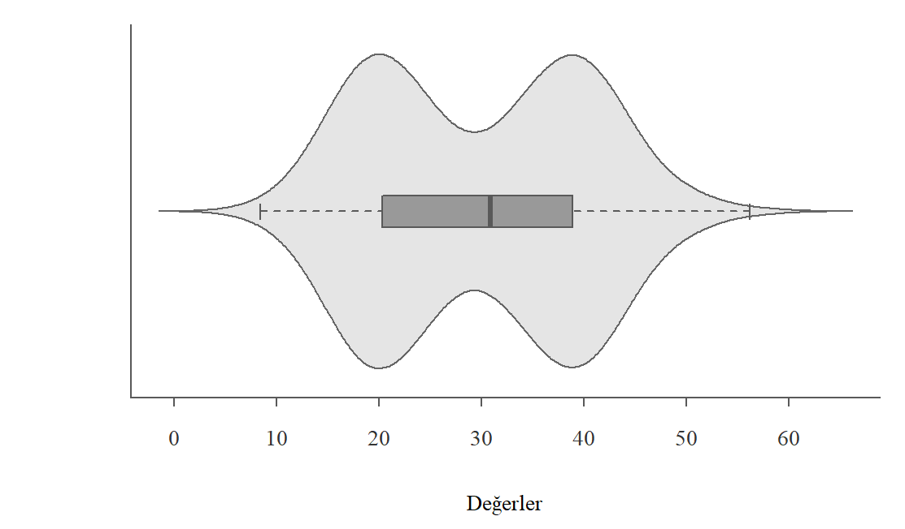
Keman grafikleri ggplot2 paketindeki geom_violin() fonksiyonuyla da çizilebilir.
Gelir, harcama ve servet gibi değişkenlerin sağa çarpık dağıldığını gördük: gözlemlerin çoğu düşük ve orta değerlerde toplanırken az sayıda gözlem çok yüksek değerler alır. Böyle bir değişken için sorulan sorulardan biri de toplamın gözlem birimleri arasında ne kadar eşit paylaşıldığıdır. Standart sapma ölçü birimine bağlıdır. Değişkenlik katsayısı birimden bağımsızdır, ama “en yoksul yüzde 20’lik kesim toplam gelirin ne kadarını alıyor” gibi bir soruyu doğrudan yanıtlamaz. Eşitsizlik ölçüleri bu tür soruları yanıtlamak için geliştirilmiştir. En çok gelir ve servet dağılımında kullanılırlar, ancak bir firmanın satışlarının müşteriler arasında, sağlık harcamalarının iller arasında ya da bir pazarın firmalar arasında nasıl paylaşıldığını incelemek için de uygulanabilirler.
Bu alt bölümde sayısal bir değişkenin, örneğin gelirin, pozitif değerler aldığını varsayacağız. Negatif değer alabilen değişkenler için bu ölçüler anlamını yitirir.
Eşitsizliği ölçmenin en basit yolu, dağılımın üst ve alt kesimlerini karşılaştırmaktır. Bu karşılaştırma iki farklı biçimde yapılabilir.
Yüzdelik oranı, iki yüzdelik değerin oranıdır. Örneğin \[ P90/P10 = \frac{\text{90'ıncı yüzdelik}}{\text{10'uncu yüzdelik}} \] oranı, gelir sıralamasında yüzde 90’lık dilimin sınırındaki bir hanenin gelirinin, yüzde 10’luk dilimin sınırındaki bir hanenin gelirinin kaç katı olduğunu gösterir. Bu oran iki hanenin gelirini karşılaştırır, grupların toplam gelirini değil.
Gelir payı oranı ise grupların toplam gelirlerini karşılaştırır. En yaygın kullanılanı \[ S80/S20 = \frac{\text{en yüksek gelirli yüzde 20'lik kesimin toplam geliri}}{\text{en düşük gelirli yüzde 20'lik kesimin toplam geliri}} \] oranıdır. TÜİK’in Gelir ve Yaşam Koşulları Araştırması sonuçlarında Gini katsayısıyla birlikte bu oran da yayımlanır. TÜİK bültenlerinde oranın adı “P80/P20”dir. Adındaki P harfine karşın bu bir yüzdelik oranı değil, gelir payı oranıdır. TÜİK aynı biçimde tanımlanmış başka pay oranları da yayımlar. P90/P10 en yüksek ve en düşük gelirli yüzde 10’luk kesimlerin paylarını, P80/P50 ve P50/P20 ise üst ve orta gelir gruplarını karşılaştırır. Dolayısıyla bizim yüzdelik oranı olarak yazdığımız P90/P10 ile TÜİK bültenlerindeki aynı adlı gösterge farklı şeylerdir. S80/S20 oranı en tepedeki çok yüksek gelirlerden etkilenir, P90/P10 oranı ise yalnızca iki sınır değere baktığı için etkilenmez.
İki oranın farkını 10 haneden oluşan küçük bir örnekle görelim. Hanelerin aylık gelirleri (bin TL) aşağıdaki gibi olsun:
gelir10 <- c(8, 12, 15, 18, 22, 25, 30, 38, 52, 80)
sum(gelir10)[1] 300On hanenin en düşük gelirli ikisi yüzde 20’lik alt kesimi, en yüksek gelirli ikisi yüzde 20’lik üst kesimi oluşturur:
gelir10 <- sort(gelir10)
alt20 <- sum(gelir10[1:2])
ust20 <- sum(gelir10[9:10])
c(alt20_pay = alt20 / sum(gelir10), ust20_pay = ust20 / sum(gelir10), S80_S20 = ust20 / alt20) alt20_pay ust20_pay S80_S20
0.06666667 0.44000000 6.60000000 En düşük gelirli yüzde 20’lik kesim toplam gelirin yüzde 6.7 kadarını, en yüksek gelirli yüzde 20’lik kesim ise yüzde 44.0 kadarını almaktadır. S80/S20 oranı 6.6 olarak bulunur: üst kesimin toplam geliri alt kesiminkinin 6.6 katıdır.
Aynı hesapları simülasyonla üretilmiş hane anakütlesinde (hane_anakutle, 20000 hane) yapalım. 20000 hane için alt ve üst yüzde 20’lik kesimler 4000’er haneden oluşur:
load("Data/hane_anakutle.RData")
gelir_h <- sort(hane_anakutle$aylik_gelir)
N_h <- length(gelir_h)
alt20_h <- sum(gelir_h[1:(0.2 * N_h)])
ust20_h <- sum(gelir_h[(0.8 * N_h + 1):N_h])
yuzdelik <- quantile(gelir_h, c(0.1, 0.9))
c(P90_P10 = yuzdelik[[2]] / yuzdelik[[1]], S80_S20 = ust20_h / alt20_h) P90_P10 S80_S20
5.157627 6.475656 Yüzde 90’lık dilimin sınırındaki hanenin geliri (6504 TL), yüzde 10’luk dilimin sınırındakinin (1261 TL) yaklaşık 5.2 katıdır. En yüksek gelirli yüzde 20’lik kesimin toplam geliri ise en düşük gelirli yüzde 20’lik kesiminkinin 6.5 katıdır. S80/S20 oranının daha büyük çıkması, üst kesimin içinde de gelirin en tepeye doğru hızla arttığını gösterir.
Yüzdelik ve pay oranları dağılımın yalnızca iki noktasına bakar. Lorenz eğrisi ise dağılımın bütününü tek bir grafikte gösterir. Gözlemler küçükten büyüğe sıralanır ve her \(k\) için en düşük gelirli \(k\) gözlemin toplam gelirden aldığı pay hesaplanır. \(y_{(1)} \leq y_{(2)} \leq \ldots \leq y_{(n)}\) sıralı gelirler olmak üzere, nüfusun \(x = k/n\) kadarlık alt kesiminin gelir payı \[ L(k/n) = \frac{\sum_{i=1}^{k} y_{(i)}}{\sum_{i=1}^{n} y_{(i)}}, \qquad k = 0, 1, \ldots, n \tag{5.17}\] olarak tanımlanır; \(L(0) = 0\) ve \(L(1) = 1\)’dir. Lorenz eğrisi, yatay eksende birikimli nüfus payını, dikey eksende birikimli gelir payını gösteren bu noktaların birleştirilmesiyle elde edilir.
Herkesin geliri eşit olsaydı nüfusun yüzde \(x\)’i gelirin de yüzde \(x\)’ini alırdı ve Lorenz eğrisi 45 derecelik \(L(x) = x\) doğrusu olurdu. Bu doğruya tam eşitlik doğrusu denir. Gelirler eşit değilse alt kesimler nüfustaki paylarından daha az gelir alır ve eğri tam eşitlik doğrusunun altında kalır. Eğri bu doğrudan ne kadar uzaksa eşitsizlik o kadar fazladır.
Lorenz eğrisinin noktalarını hesaplayan bir fonksiyon yazalım ve 10 hane örneğine uygulayalım:
lorenz_hesapla <- function(y) {
y <- sort(y)
data.frame(nufus_payi = c(0, seq_along(y) / length(y)),
gelir_payi = c(0, cumsum(y) / sum(y)))
}
lorenz10 <- lorenz_hesapla(gelir10)
round(lorenz10, 3) nufus_payi gelir_payi
1 0.0 0.000
2 0.1 0.027
3 0.2 0.067
4 0.3 0.117
5 0.4 0.177
6 0.5 0.250
7 0.6 0.333
8 0.7 0.433
9 0.8 0.560
10 0.9 0.733
11 1.0 1.000plot(lorenz10$nufus_payi, lorenz10$gelir_payi, type = "n",
xlim = c(0, 1), ylim = c(0, 1),
xlab = "Birikimli nüfus payı", ylab = "Birikimli gelir payı")
abline(0, 1, lty = 2)
lines(lorenz10$nufus_payi, lorenz10$gelir_payi, type = "b", pch = 19, lwd = 2)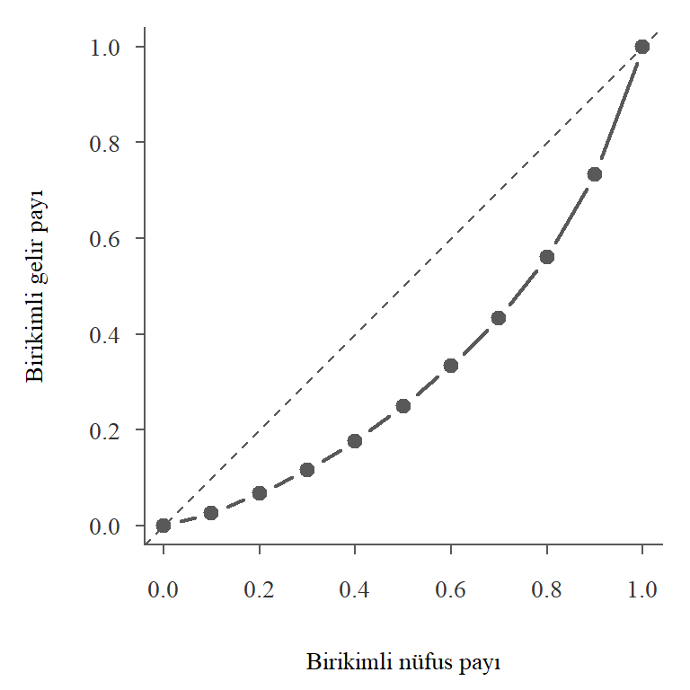
Şekil 5.18 bu örneğin Lorenz eğrisini göstermektedir. Eğri, tam eşitlik doğrusunun (kesikli çizgi) belirgin biçimde altındadır. Nüfusun yarısını oluşturan en düşük gelirli 5 hane toplam gelirin yüzde 25.0 kadarını alırken en yüksek gelirli tek hane gelirin yüzde 26.7 kadarını almaktadır. S80/S20 oranı da Lorenz eğrisinden okunabilir: alt yüzde 20’nin payı \(L(0.2)\), üst yüzde 20’nin payı \(1 - L(0.8)\)’dir.
Lorenz eğrisi eşitsizliği bir bütün olarak gösterir, ama iki dağılımı ya da bir ülkenin farklı yıllarını karşılaştırırken tek bir sayıya ihtiyaç duyarız. Gini katsayısı en yaygın kullanılan eşitsizlik ölçüsüdür ve doğrudan Lorenz eğrisinden tanımlanır. Şekil 5.19 üzerinde tam eşitlik doğrusu ile Lorenz eğrisi arasında kalan alana \(A\), Lorenz eğrisinin altında kalan alana \(B\) diyelim. Gini katsayısı \[ G = \frac{A}{A + B} \tag{5.18}\] olarak tanımlanır. Tam eşitlik doğrusunun altındaki üçgenin alanı \(A + B = 1/2\) olduğu için \(G = 2A = 1 - 2B\) olarak da yazılabilir.
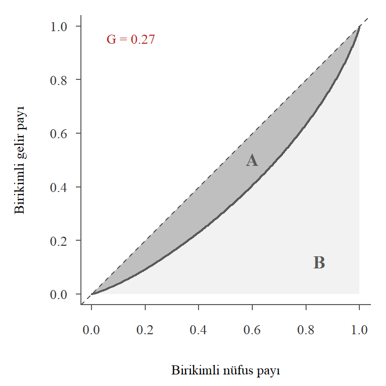
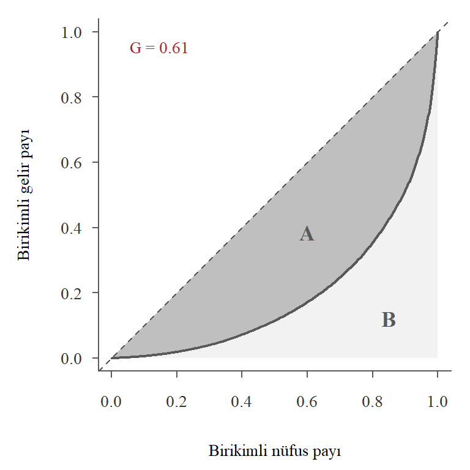
Şekil 5.19 medyanları aynı, ama yayılımları farklı iki gelir dağılımı için bu alanları göstermektedir. Koyu gri bölge \(A\), açık gri bölge \(B\)’dir. Eşitsizlik arttıkça Lorenz eğrisi aşağı doğru sarkar, \(A\) alanı büyür, \(B\) alanı küçülür. Soldaki dağılımda Gini katsayısı 0.27, sağdakinde 0.61 olarak bulunur.
Gelirler tam eşitse Lorenz eğrisi tam eşitlik doğrusuyla çakışır, \(A = 0\) ve \(G = 0\) olur. Eşitsizlik arttıkça eğri aşağı doğru sarkar ve \(G\) büyür. Bütün gelir tek bir gözlem biriminde toplanırsa \(G\) en büyük değerini alır. Bu değer \(n\) gözlemli bir veri için \((n-1)/n\)’dir ve gözlem sayısı büyüdükçe 1’e yaklaşır.
Gini katsayısını alan hesaplamadan, doğrudan gözlemlerden de hesaplayabiliriz. Katsayı, bütün gözlem çiftleri arasındaki mutlak gelir farklarının ortalamasının, ortalama gelirin iki katına oranına eşittir: \[ G = \frac{\sum_{i=1}^{n}\sum_{j=1}^{n} |y_i - y_j|}{2 n^2 \bar{y}} \tag{5.19}\] Bu tanım Gini katsayısına ikinci bir yorum kazandırır. Rassal olarak seçilen iki hane arasındaki beklenen gelir farkı, ortalama gelirin \(2G\) katıdır. \(n\) büyükken \(n^2\) çift üzerinden toplam almak yavaş olduğu için pratikte bu formülün sıralı gözlemlerle yazılmış eşdeğer biçimi kullanılır: \[ G = \frac{\sum_{i=1}^{n} (2i - n - 1)\, y_{(i)}}{n^2 \bar{y}} \tag{5.20}\] 10 hane örneğinde üç yolun da aynı sonucu verdiğini görelim:
# (1) Alan tanımı: Lorenz eğrisinin altındaki alan B, yamuklar toplamı olarak
B <- sum(diff(lorenz10$nufus_payi) *
(head(lorenz10$gelir_payi, -1) + tail(lorenz10$gelir_payi, -1)) / 2)
gini_alan <- 1 - 2 * B
# (2) Bütün çiftler arasındaki mutlak farklar
n10 <- length(gelir10)
gini_fark <- sum(abs(outer(gelir10, gelir10, "-"))) / (2 * n10^2 * mean(gelir10))
# (3) Sıralı gözlemlerle
gini_hesapla <- function(y) {
y <- sort(y)
n <- length(y)
sum((2 * seq_len(n) - n - 1) * y) / (n^2 * mean(y))
}
c(alan = gini_alan, ciftler = gini_fark, sirali = gini_hesapla(gelir10)) alan ciftler sirali
0.3606667 0.3606667 0.3606667 Bu örnekte Gini katsayısı 0.361 olarak bulunur. outer() fonksiyonu iki vektörün bütün eleman çiftlerine bir işlem uygulayarak bir matris oluşturur; burada \(10 \times 10\) boyutlu farklar matrisini üretmiştir. Hane anakütlesinde ise aylık gelirin Gini katsayısı 0.364 olarak bulunur:
gini_hesapla(hane_anakutle$aylik_gelir)[1] 0.3636042Gini katsayısı genellikle 0-1 aralığında raporlanır, ancak bazı kaynaklar 100 ile çarparak 0-100 aralığında verir. Örneğin ülke veri kümesindeki (bkz. Örnek 3.4) gini değişkeni bu ölçektedir:
Türkiye için veri kümesindeki son gözlem olan 2023 yılı değeri 43.7, 0-1 ölçeğinde 0.437 değerine karşılık gelir.
İyi bir eşitsizlik ölçüsünden beklenen birkaç özellik vardır. Bunları Gini katsayısı üzerinde görelim.
Ölçekten bağımsızlık. Bütün gelirler aynı sabitle çarpıldığında, örneğin TL yerine bin TL kullanıldığında ya da her gelir iki katına çıktığında, gelir payları ve dolayısıyla eşitsizlik ölçüsü değişmemelidir. Değişkenlik katsayısında olduğu gibi Gini katsayısı da bu özelliğe sahiptir. Buna karşılık herkese aynı miktarda gelir eklemek, düşük gelirlilerin payını görece daha fazla artırdığı için eşitsizliği azaltır:
c(ilk = gini_hesapla(gelir10),
bin_katina = gini_hesapla(1000 * gelir10),
herkese_10_eklenince = gini_hesapla(gelir10 + 10)) ilk bin_katina herkese_10_eklenince
0.3606667 0.3606667 0.2705000 Transfer ilkesi. Daha yüksek gelirli bir haneden daha düşük gelirli bir haneye, sıralamalarını değiştirmeyecek kadar gelir aktarıldığında eşitsizlik ölçüsü azalmalıdır. En yüksek gelirli haneden (80) en düşük gelirli haneye (8) 10 bin TL aktaralım:
gelir10_transfer <- gelir10
gelir10_transfer[1] <- gelir10_transfer[1] + 10
gelir10_transfer[10] <- gelir10_transfer[10] - 10
c(once = gini_hesapla(gelir10), sonra = gini_hesapla(gelir10_transfer)) once sonra
0.3606667 0.3066667 Toplam gelir değişmediği hâlde Gini katsayısı 0.361 değerinden 0.307 değerine düşmüştür. P90/P10 gibi yalnızca iki noktaya bakan oranlar bu tür transferleri her zaman yakalayamaz, çünkü transfer sınır değerlerin dışındaki haneler arasında gerçekleşebilir.
Tek bir sayı dağılımın bütününü özetleyemez. Farklı dağılımların Gini katsayıları aynı olabilir. Dört kişilik iki topluluk düşünelim. Birincisinde üç kişinin geliri 10, bir kişinin geliri 50 bin TL’dir. İkincisinde bir kişinin hiç geliri yoktur, diğerlerinin gelirleri 15, 30 ve 35 bin TL’dir:
topluluk1 <- c(10, 10, 10, 50)
topluluk2 <- c(0, 15, 30, 35)
c(topluluk1 = gini_hesapla(topluluk1), topluluk2 = gini_hesapla(topluluk2))topluluk1 topluluk2
0.375 0.375 l1 <- lorenz_hesapla(topluluk1)
l2 <- lorenz_hesapla(topluluk2)
plot(l1$nufus_payi, l1$gelir_payi, type = "b", pch = 19, lwd = 2,
xlim = c(0, 1), ylim = c(0, 1),
xlab = "Birikimli nüfus payı", ylab = "Birikimli gelir payı")
lines(l2$nufus_payi, l2$gelir_payi, type = "b", pch = 17, lwd = 2, col = "firebrick")
abline(0, 1, lty = 2)
legend("topleft", bty = "n", pch = c(19, 17), lwd = 2, col = c("black", "firebrick"),
legend = c("Topluluk 1: 10, 10, 10, 50", "Topluluk 2: 0, 15, 30, 35"))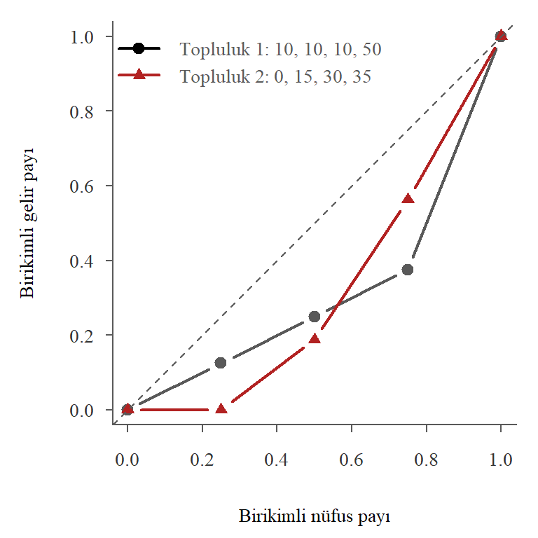
İki topluluğun da Gini katsayısı 0.375 olarak bulunur, ama eşitsizliğin biçimi farklıdır (Şekil 5.20). Birinci toplulukta alttaki üç kişinin gelirleri eşittir ve eşitsizlik tepedeki tek bir kişiden kaynaklanır. İkinci toplulukta ise tepede böyle aşırı bir gelir yoktur, ama en yoksul kişi hiç gelir almaz. Lorenz eğrileri kesiştiğinde hangi dağılımın “daha eşit” olduğu, alt kesime mi yoksa üst kesime mi daha fazla önem verdiğimize bağlıdır. Bu yüzden Gini katsayısını Lorenz eğrisi ve pay oranlarıyla birlikte raporlamak iyi bir uygulamadır.
Veriyi yorumlarken dikkat edilecekler. Eşitsizlik ölçüleri neyin ölçüldüğüne duyarlıdır. Hane geliri ile kişi başına gelirin eşitsizliği farklı çıkabilir, çünkü haneler kişi sayısı bakımından farklıdır (bkz. Alıştırma 5.7). Resmi istatistiklerde bu yüzden hane geliri, hanedeki kişi sayısı ve yaşları dikkate alınarak düzeltilmiş “eşdeğer hane geliri” üzerinden hesaplanır. Ayrıca bazı ülkeler eşitsizliği gelir, bazıları tüketim harcaması üzerinden ölçer. Ülkeler arası karşılaştırmalarda bu farkı göz önünde tutmak gerekir. Hangi gelir kavramının kullanıldığı da önemlidir. TÜİK 2022 yılından bu yana Gini katsayısını sosyal transferler hariç tutarak da hesaplamaktadır. Transfer öncesi ve sonrası katsayıların karşılaştırılması, emekli aylıklarının ve sosyal yardımların eşitsizliği ne kadar azalttığını gösterir.
Gini katsayısı dışında da eşitsizlik ölçüleri vardır. Theil endeksi eşitsizliği gruplar arası ve grup içi kısımlara ayırmaya imkan verir; örneğin Türkiye’deki gelir eşitsizliğinin ne kadarının bölgeler arası farklardan kaynaklandığını incelemek için kullanılabilir. Atkinson endeksi ise alt kesimlerdeki eşitsizliğe ne kadar ağırlık verileceğini bir parametreyle belirlemeye izin verir. Bu ölçüler daha ileri düzeydeki gelir dağılımı çalışmalarında kullanılır.
Alıştırma 5.1 Bir sayısal vektörü girdi olarak alan ve medyanı hesaplayan bir R fonksiyonu yazınız.
Çözüm
# Medyanı hesaplayan fonksiyon
# x = nümerik vektör
medyan <- function(x) {
# Girdinin sayısal olup olmadığını kontrol etme
if (!is.numeric(x)) {
stop("Girdi sayısal bir vektör olmalıdır.")
}
sirali_veriler <- sort(x) # sırala
n <- length(sirali_veriler) # verinin boyutu
if (n %% 2 == 1) {
# Tek sayıdaki veri seti için
medyan <- sirali_veriler[(n+1)/2]
} else {
# Çift sayıdaki veri seti için
ortadaki1 <- sirali_veriler[n/2]
ortadaki2 <- sirali_veriler[(n/2)+1]
medyan <- (ortadaki1 + ortadaki2)/2
}
return(medyan)
}
medyan(gpa)[1] 3medyan(gpa2)[1] 2.9Burada (n %% 2) işlemi \(n\)’in 2’ye bölümünden kalanı verir. Çift sayılar için 0, tek sayılar için ise 1 değerini alır.
Alıştırma 5.2
dataset1 <- c(48, 49, 50, 51, 52, 48, 49, 50, 51, 52)
dataset2 <- c(40, 45, 48, 50, 52, 55, 58, 60, 45, 47)Çözüm
ortalama <- mean(dataset1)
medyan <- median(dataset1)
q1 <- quantile(dataset1, 0.25)
q3 <- quantile(dataset1, 0.75)
iqr <- IQR(dataset1)
aralik <- max(dataset1) - min(dataset1)
stats1 <- rbind(ortalama, medyan, q1, q3, iqr, aralik)
colnames(stats1) <- "dataset1"
stats1 dataset1
ortalama 50
medyan 50
q1 49
q3 51
iqr 2
aralik 4ortalama <- mean(dataset2)
medyan <- median(dataset2)
q1 <- quantile(dataset2, 0.25)
q3 <- quantile(dataset2, 0.75)
iqr <- IQR(dataset2)
aralik <- max(dataset2) - min(dataset2)
stats2 <- rbind(ortalama, medyan, q1, q3, iqr, aralik)
colnames(stats2) <- "dataset2"
stats2 dataset2
ortalama 50.00
medyan 49.00
q1 45.50
q3 54.25
iqr 8.75
aralik 20.00cbind(stats1, stats2) dataset1 dataset2
ortalama 50 50.00
medyan 50 49.00
q1 49 45.50
q3 51 54.25
iqr 2 8.75
aralik 4 20.00Her iki veri kümesinin ortalaması aynıdır, medyan değerleri birbirine çok yakındır. Ancak ikinci veri setinin değişkenliği daha fazladır. Gözlemlerin ortadaki yarısının yayılımını ölçen IQR ikinci veri kümesinde 8.75, birincisinde ise 2 olarak bulunmuştur. Aralık da birinci veri kümesinde 4, ikincisinde 20’dir. Burada quantile() ve IQR() fonksiyonları öntanımlı type = 7 yöntemini kullanmaktadır.
Elle yaptığınız hesapta ise \((n+1)p\) konum formülünü kullandık. Bunun R’daki karşılığı type = 6 seçeneğidir:
kartil6 <- function(x) c(q1 = unname(quantile(x, 0.25, type = 6)),
q3 = unname(quantile(x, 0.75, type = 6)),
iqr = unname(IQR(x, type = 6)))
cbind(dataset1 = kartil6(dataset1), dataset2 = kartil6(dataset2)) dataset1 dataset2
q1 48.75 45.00
q3 51.25 55.75
iqr 2.50 10.75Elle bulduğunuz değerler bu tabloyla eşleşmelidir. Her iki yöntem de aynı kartil tanımına dayanır, farkları gözlemler arasındaki ara değerin nasıl alındığındadır. Bu fark yalnızca küçük veri kümelerinde göze çarpar, gözlem sayısı arttıkça iki yöntem birbirine yaklaşır.
Alıştırma 5.3 Rassal sayılar çekilerek bir veri kümesi oluşturulmuştur:
# örnek veri seti simülasyonu
set.seed(123)
x1 = rnorm(100, mean=5, sd=1.2)
x2 = rnorm(100, mean=0, sd=0.8)
grup = sample(c("A", "B", "C"), 100, replace = TRUE)
y = 2 + 2*x1 - 3*x2 + 5*(grup=="B") + 8*(grup=="C") + rnorm(100)
#
df <- data.frame(y, x1, x2, grup) # veri çerçevesini oluştur
head(df) y x1 x2 grup
1 18.60331 4.327429 -0.56832525 C
2 18.44227 4.723787 0.20550697 C
3 24.42217 6.870450 -0.19735350 C
4 13.84834 5.084610 -0.27803408 A
5 15.55670 5.155145 -0.76129485 A
6 24.90853 7.058078 -0.03602218 CBuna göre aşağıdaki soruları yanıtlayın.
Çözüm:
summary(df) y x1 x2 grup
Min. : 6.04 Min. :2.229 Min. :-1.64260 Length:100
1st Qu.:13.72 1st Qu.:4.407 1st Qu.:-0.64088 Class :character
Median :17.54 Median :5.074 Median :-0.18066 Mode :character
Mean :16.88 Mean :5.108 Mean :-0.08604
3rd Qu.:19.78 3rd Qu.:5.830 3rd Qu.: 0.37427
Max. :27.50 Max. :7.625 Max. : 2.59283 Ortalama ve medyan değerlerinden hareketle y ve x1’in yaklaşık olarak simetrik, x2’nin ise hafif sağa çarpık olduğunu söyleyebiliriz.
summary(df$y[df$grup == "A"]) Min. 1st Qu. Median Mean 3rd Qu. Max.
6.04 8.90 11.14 11.83 13.85 22.14 summary(df$y[df$grup == "B"]) Min. 1st Qu. Median Mean 3rd Qu. Max.
7.794 16.054 18.067 17.719 19.538 24.500 summary(df$y[df$grup == "C"]) Min. 1st Qu. Median Mean 3rd Qu. Max.
15.59 18.75 20.31 21.17 23.58 27.50 Bu sonuçlara göre grup A en düşük ortalama ve medyana, grup C ise en yüksek ortalama ve medyana sahiptir. Grup B ikisinin arasındadır. Bunun yanı sıra birinci ve üçüncü kartillerin de benzer şekilde A’dan C’ye doğru arttığını görüyoruz.
boxplot(formula = y ~ grup,
data = df, at = c(0, 0.5, 1.0), ylim=c(0,30),
horizontal = FALSE,
frame.plot = FALSE,
boxwex = .3, # daha dar kutu
boxfill ="gray80",
whiskcol = "gray70",
boxcol = "grey70",
outcol = "grey70",
whisklty = 1,
outpch = 20, # uç değerler nokta
outcex = 0.8, # uç değer boyutu
medlwd = 1.0
)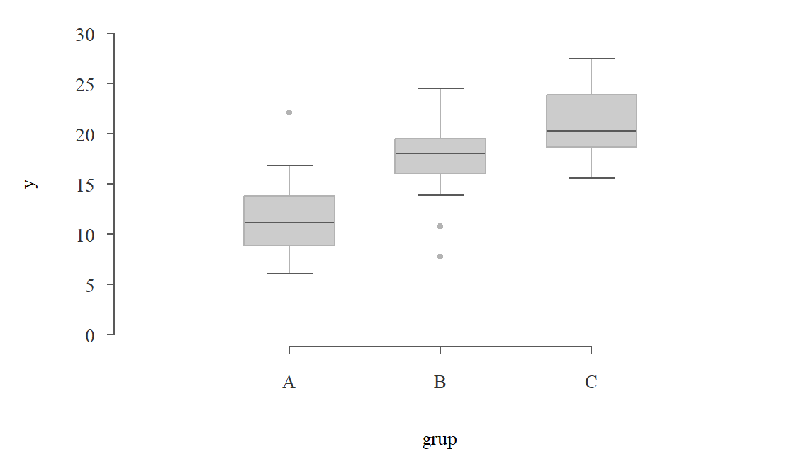
Önceki kısımda belirttiğimiz gibi y’nin medyanı grup C’de en yüksek değeri almaktadır. Gruplarda ortalama ile medyanı karşılaştırdığımızda A ve C gruplarında ortalamanın medyandan büyük, B grubunda ise küçük olduğunu görürüz. Bu, A ve C gruplarında sağa, B grubunda hafif sola çarpıklığa işaret eder. Ancak her grupta yalnızca 32-35 gözlem bulunduğu için bu tür biçim yorumlarını temkinli yapmak gerekir.
Bu grafiği plot() fonksiyonu ile de çizebiliriz:
plot(as.factor(df$grup), df$y)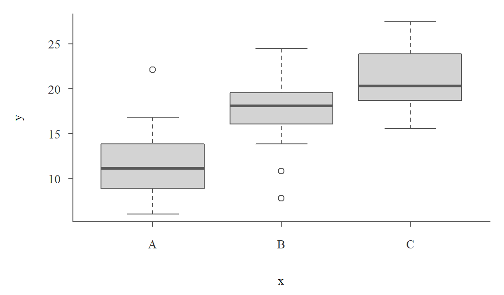
Alıştırma 5.4 Ülke veri kümesini kullanarak 2022 yılında kişi başına GSYİH’nin (kisi_basi_gsyih_sagp) ağırlıksız ve nüfus ağırlıklı ortalamalarını hesaplayınız. İki ortalama neden farklıdır ve her biri hangi soruyu yanıtlar?
Çözüm
load("Data/ulkeler.RData")
kesit_2022 <- subset(ulkeler, yil == 2022)
gsyih_veri <- subset(kesit_2022, !is.na(kisi_basi_gsyih_sagp))
c(agirliksiz = mean(gsyih_veri$kisi_basi_gsyih_sagp),
nufus_agirlikli = weighted.mean(gsyih_veri$kisi_basi_gsyih_sagp, w = gsyih_veri$nufus)) agirliksiz nufus_agirlikli
26896.90 20558.88 Ağırlıksız ortalama yaklaşık 26900 dolar, nüfus ağırlıklı ortalama ise yaklaşık 20600 dolar olarak bulunur. İki sayı farklı soruları yanıtlar. Ağırlıksız ortalamada Lüksemburg ile Hindistan aynı ağırlığı taşır, yani bu ortalama “tipik bir ülkede” kişi başına gelirin ne olduğunu söyler. Nüfus ağırlıklı ortalama ise dünyada rassal olarak seçilen bir kişinin yaşadığı ülkede kişi başına gelirin ortalamasıdır. Hindistan gibi kalabalık ülkelerde kişi başına gelir görece düşük, nüfusu az olan birçok ülkede ise yüksek olduğu için nüfus ağırlıklı ortalama daha düşük çıkmaktadır.
Nüfus ağırlıklı ortalamanın bir yorumu daha vardır. Formülün payında her ülkenin kişi başına geliri nüfusuyla çarpıldığı için pay bu ülkelerin toplam GSYİH’sine, payda ise toplam nüfusuna eşittir. Yani nüfus ağırlıklı ortalama, bu ülkelerin tamamı tek bir ülke gibi düşünüldüğünde elde edilen kişi başına GSYİH’dir. Hangi ortalamanın kullanılacağı araştırma sorusuna bağlıdır.
Alıştırma 5.5 Ülke veri kümesini kullanarak Türkiye’de 2000-2024 döneminde kişi başına GSYİH’nin (sabit 2015 ABD doları) yıllık büyüme hızlarını hesaplayınız. Büyüme hızlarının aritmetik ve geometrik ortalamalarını bulunuz. Hangisinin dönem başındaki ve sonundaki değerleri birbirine bağladığını gösteriniz.
Çözüm
Her yılın değerini bir önceki yılın değerine bölüp 1 çıkarırız:
load("Data/ulkeler.RData")
tr <- subset(ulkeler, ulke == "Türkiye" & yil >= 2000)
buyume <- tr$kisi_basi_gsyih[-1] / tr$kisi_basi_gsyih[-nrow(tr)] - 1
names(buyume) <- tr$yil[-1]
round(100 * buyume, 1)2001 2002 2003 2004 2005 2006 2007 2008 2009 2010 2011 2012 2013 2014 2015 2016
-6.6 5.2 4.6 8.7 8.0 6.0 4.9 -0.3 -6.2 6.9 9.4 3.5 7.1 3.2 4.4 1.9
2017 2018 2019 2020 2021 2022 2023 2024
6.4 2.1 -0.1 0.8 10.8 4.4 4.6 3.1 Büyüme hızlarının aritmetik ve geometrik ortalamaları:
aritmetik <- mean(buyume)
geometrik <- prod(1 + buyume)^(1 / length(buyume)) - 1
round(100 * c(aritmetik = aritmetik, geometrik = geometrik), 2)aritmetik geometrik
3.86 3.78 Dönem boyunca yıllık büyüme en düşük yüzde -6.6 (2001 yılı), en yüksek yüzde 10.8 (2021 yılı) olarak gerçekleşmiştir. Aritmetik ortalama yüzde 3.86, geometrik ortalama ise yüzde 3.78 olarak bulunur.
Geometrik ortalama dönemin başındaki ve sonundaki değerleri birbirine bağlar. 2000 yılındaki kişi başına geliri her yıl geometrik ortalama oranında büyütürsek 2024 yılındaki değere ulaşırız:
c(tahmin = tr$kisi_basi_gsyih[1] * (1 + geometrik)^length(buyume),
gerceklesen = tr$kisi_basi_gsyih[nrow(tr)]) tahmin gerceklesen
15395.03 15395.03 Bu örnekte iki ortalama arasındaki fark küçüktür, çünkü büyüme hızları yatırım örneğindeki getirilere göre daha az oynaktır (bkz. Örnek 5.13). Oranlar yıldan yıla ne kadar çok dalgalanırsa aritmetik ortalama ile geometrik ortalama arasındaki fark o kadar büyür.
Alıştırma 5.6 Hane anakütlesinde (hane_anakutle) aylık gelirin ortalamasını ve medyanını hesaplayınız. Hanelerin yüzde kaçının geliri ortalamanın altındadır? Sonucu dağılımın biçimiyle ilişkilendiriniz.
Çözüm
load("Data/hane_anakutle.RData")
gelir <- hane_anakutle$aylik_gelir
c(ortalama = mean(gelir), medyan = median(gelir))ortalama medyan
3544.640 2825.833 mean(gelir < mean(gelir)) # ortalamanın altındaki hanelerin oranı[1] 0.63825Ortalama aylık gelir 3545 TL, medyan ise 2826 TL olarak bulunur. Hanelerin yüzde 63.8 kadarının geliri ortalamanın altındadır. Son satırda mantıksal bir vektörün ortalamasını aldık; TRUE değerleri 1 sayıldığı için bu ortalama koşulu sağlayan hanelerin oranını verir.
Medyan tanımı gereği hanelerin yarısını altında bırakır. Ortalama medyandan büyük olduğu için yarıdan fazlasını altında bırakır. Bunun nedeni gelirin sağa çarpık olmasıdır: az sayıdaki çok yüksek gelirli hane ortalamayı yukarı çeker, ama medyanı neredeyse hiç etkilemez. “Hanelerin çoğunun geliri ortalamanın altındadır” ifadesi bu yüzden bir çelişki değil, sağa çarpık dağılımların doğal bir sonucudur. Aynı mantıkla sola çarpık bir dağılımda gözlemlerin çoğu ortalamanın üzerinde kalabilir (bkz. Problem 5.6).
Alıştırma 5.7 Hane anakütlesinde (hane_anakutle) aylık hane geliri ile kişi başına aylık gelirin (hane gelirinin hanedeki kişi sayısına bölünmesiyle) Lorenz eğrilerini aynı grafikte çiziniz. İki değişken için Gini katsayısını ve S80/S20 oranını hesaplayınız. Farkı nasıl açıklarsınız?
Çözüm
Önce kişi başına geliri hesaplayalım. Lorenz eğrisi ve Gini katsayısı için metinde yazdığımız lorenz_hesapla() ve gini_hesapla() fonksiyonlarını kullanıyoruz. S80/S20 oranı için de bir fonksiyon yazalım:
kisi_basi_gelir <- hane_anakutle$aylik_gelir / hane_anakutle$hane_kisi_sayisi
s80s20_hesapla <- function(y) {
y <- sort(y)
n <- length(y)
sum(y[(n - floor(0.2 * n) + 1):n]) / sum(y[1:floor(0.2 * n)])
}
rbind(hane_geliri = c(gini = gini_hesapla(hane_anakutle$aylik_gelir),
S80_S20 = s80s20_hesapla(hane_anakutle$aylik_gelir)),
kisi_basi_gelir = c(gini_hesapla(kisi_basi_gelir), s80s20_hesapla(kisi_basi_gelir))) gini S80_S20
hane_geliri 0.3636042 6.475656
kisi_basi_gelir 0.4176097 8.761337l_hane <- lorenz_hesapla(hane_anakutle$aylik_gelir)
l_kisi <- lorenz_hesapla(kisi_basi_gelir)
plot(l_hane$nufus_payi, l_hane$gelir_payi, type = "l", lwd = 2,
xlim = c(0, 1), ylim = c(0, 1),
xlab = "Birikimli hane payı", ylab = "Birikimli gelir payı")
lines(l_kisi$nufus_payi, l_kisi$gelir_payi, lwd = 2, col = "firebrick")
abline(0, 1, lty = 2)
legend("topleft", bty = "n", lwd = 2, col = c("black", "firebrick"),
legend = c("Hane geliri", "Kişi başına gelir"))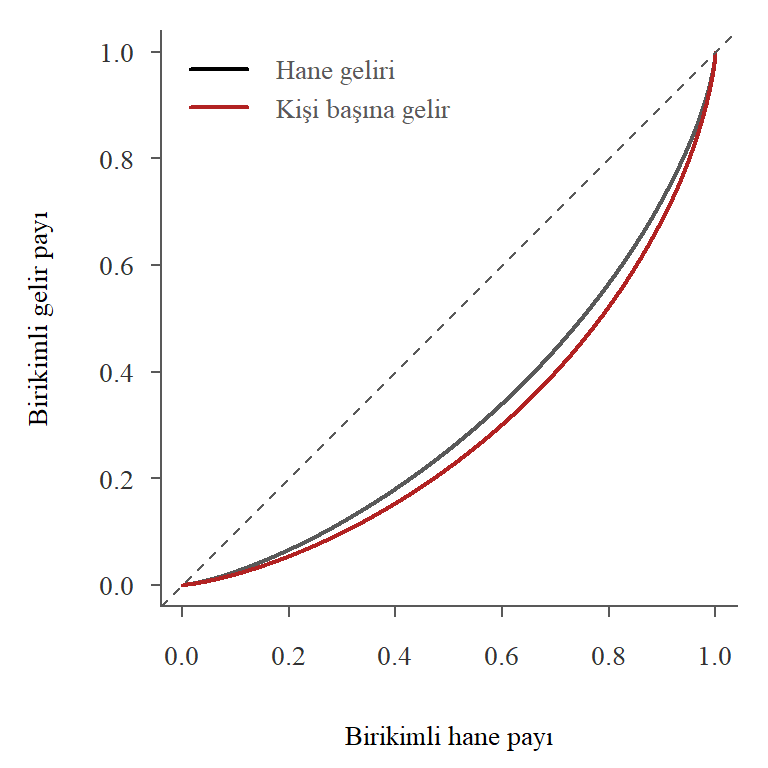
Hane gelirinin Gini katsayısı 0.364, kişi başına gelirinki ise 0.418 olarak bulunur. Kişi başına gelirin Lorenz eğrisi de tam eşitlik doğrusundan daha uzaktadır (Şekil 5.21). Bu farkın nedeni hane büyüklüğü ile gelir arasındaki ilişkidir. Kalabalık hanelerin geliri ortalamada daha yüksektir, ama kişi sayısıyla orantılı olarak artmaz:
round(tapply(hane_anakutle$aylik_gelir, hane_anakutle$hane_kisi_sayisi, median)[1:6]) 1 2 3 4 5 6
2226 2526 2776 2990 3163 3442 Beş kişilik hanelerin medyan geliri tek kişilik hanelerinkinden yüksektir, ama beş katı değil, iki katından da azdır. Bu yüzden gelir kişi başına çevrildiğinde kalabalık haneler dağılımın alt kesimine kayar ve eşitsizlik artar. Hangi ölçünün doğru olduğu sorulan soruya bağlıdır: hanelerin refahını karşılaştırırken kişi sayısını hesaba katmak gerekir. Öte yandan kişi başına gelir de kalabalık hanelerin kira, ısınma gibi ortak giderlerden sağladığı tasarrufu göz ardı eder. Metinde değindiğimiz eşdeğer hane geliri bu iki uç arasında bir düzeltme yapar. Son olarak, burada her haneyi tek bir gözlem saydığımızı belirtelim. Eşitsizliği hanelerin değil kişilerin arasında ölçmek istersek her hanenin kişi başına gelirini hanedeki kişi sayısı kadar tekrarlamamız, yani haneleri kişi sayısıyla ağırlıklandırmamız gerekir.
Problem 5.1 Aşağıdaki soruları yanıtlayın.
Problem 5.2 Büyük bir toplulukta IQ skorları ortalaması 100 standart sapması 10 olan bir dağılıma uymaktadır.
Problem 5.3 Aşağıdaki tablonun sütunlarındaki her değişken için ortalama, medyan, mod, standart sapma, IQR ve değişkenlik katsayısını bulun. Hangi değişkenler için değişkenlik katsayısı anlamlı değildir? Neden?
| X | Y | Z | A | B | C | D |
|---|---|---|---|---|---|---|
| 0 | 5 | -3 | 24 | 5 | 124 | 55 |
| 1 | 3 | -2 | 30 | 5 | 85 | 64 |
| 0 | 0 | -1 | 12 | 5 | 102 | 72 |
| 0 | 6 | 0 | 7 | 5 | 156 | 75 |
| 1 | 10 | 1 | 15 | 3 | 133 | 78 |
| 1 | 1 | 2 | 28 | 1 | 115 | 85 |
Problem 5.4 Aşağıdaki veri kümesini düşünelim: \[ (51, 42, 51, 56, 54, 58, 49, 60, 52, 55, 52, 51, 49, 42, 44, 54, 50, 46, 53, 50, 47, 52, 49, 50, 49) \] Bilgisayar kullanmadan:
Problem 5.5 Aşağıdaki ifadelerin doğru/yanlış olup olmadıklarını belirtin ve kısaca açıklayın.
Problem 5.6 Çok sayıda öğrencinin katıldığı bir sınavın sonucuna ilişkin aşağıdaki yorumlar yapılıyor:
Bu ifadelerden hangileri kesin olarak yanlıştır? Kısaca açıklayınız.
Problem 5.7 Ortalaması 10 standart sapması 2 olan 5 sayı oluşturun (bilgisayar kullanmayın).
Problem 5.8 ulkeler.RData verisini kullanarak aşağıdaki soruları yanıtlayınız.
yasam_beklentisi) 1960 ve 2022 yıllarındaki histogramlarını aynı eksen sınırlarıyla çizerek karşılaştırınız. Dağılımın merkezi, yayılımı ve biçimi nasıl değişmiştir?saglik_harcamasi) gelir gruplarına göre kutu çizimiyle gösteriniz ve yorumlayınız.gini) kaç ülke için gözlenmiştir? Gözlenen ülkelerin ortalamasını hesaplayınız. Bu ortalamanın bütün ülkeleri temsil ettiğini söyleyebilir misiniz? Hangi bölgelerde eksik gözlemin daha fazla olduğuna bakarak tartışınız.kentlesme) ve dış ticaretin GSYİH’ye oranı (dis_ticaret) için değişkenliğin ülkeler arası payını hesaplayınız ve sonuçları yorumlayınız.Problem 5.9 eticaret.RData verisini kullanarak aşağıdaki soruları yanıtlayınız.
teslim_suresi) modunu, medyanını ve beş sayı özetini bulunuz.memnuniyet) kaç eksik gözlem vardır? mean() fonksiyonunu na.rm = TRUE argümanıyla ve argümansız çalıştırarak farkı gözleyiniz. Bu değişken için ortalama mı, medyan mı daha uygun bir özettir?kampanya_grubu) göre hesaplayınız ve yorumlayınız.eticaret_gunluk verisinde günlük sipariş sayısının değişkenlik katsayısını hafta içi ve hafta sonu günleri için ayrı ayrı hesaplayınız.Problem 5.10 ogrenci_anket.RData verisini kullanarak aşağıdaki soruları yanıtlayınız.
istatistik_zorluk) için ortalama almak neden tartışmalıdır? Bu değişkenleri medyan ve mod ile özetleyiniz.Problem 5.11 hane_ornek.RData verilerini kullanarak aşağıdaki soruları yanıtlayınız:
sigara hanede sigara içen varsa 1, yoksa 2 değerini alan bir kategorik değişkendir. Bunu kullanarak bir faktör değişkeni oluşturun. Hanelerin yüzde kaçında sigara içilmektedir?ozel_sigorta değişkeni hanehalkının özel sigortası varsa 1 yoksa 2 değerini almaktadır. Hanelerin ne kadarının özel sigortası vardır?Problem 5.12 Beş kişilik bir topluluğun aylık gelirleri (bin TL) 2, 4, 6, 8 ve 30’dur.
gini_hesapla() fonksiyonuyla kontrol edin.Problem 5.13 ulkeler.RData verilerini kullanarak aşağıdaki soruları yanıtlayınız. Gini katsayısı (gini, 0-100 ölçeğinde) her ülke için her yıl gözlenmemektedir.
bolge) göre kutu çizimlerini oluşturun ve bölgelerin medyanlarını hesaplayın. Eşitsizliğin en yüksek ve en düşük olduğu bölgeler hangileridir? Gözlem sayısı az olan bölgeler için yorum yaparken nelere dikkat etmek gerekir?Problem 5.14 besiktas_ev.RData ve bakirkoy_ev.RData verilerini kullanarak aşağıdaki soruları yanıtlayınız.